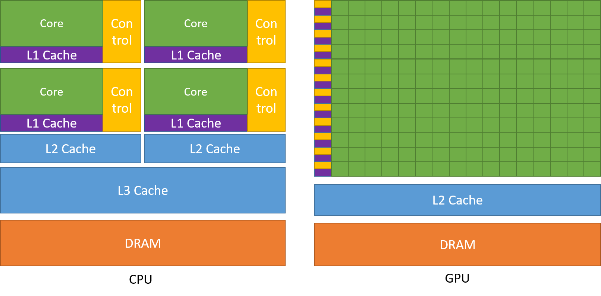
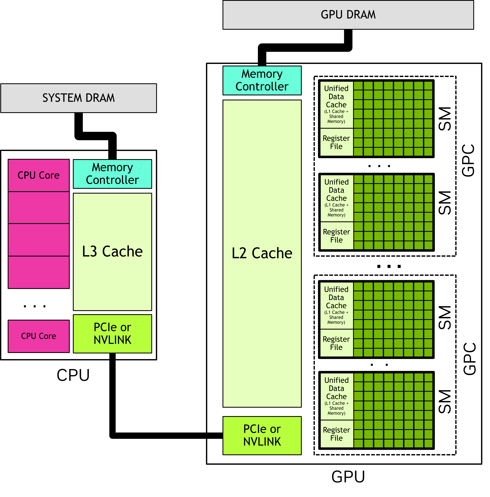
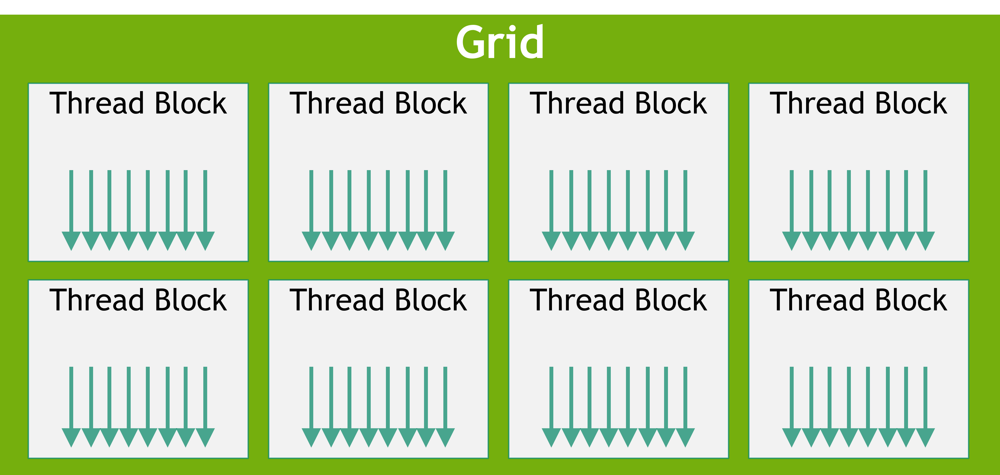
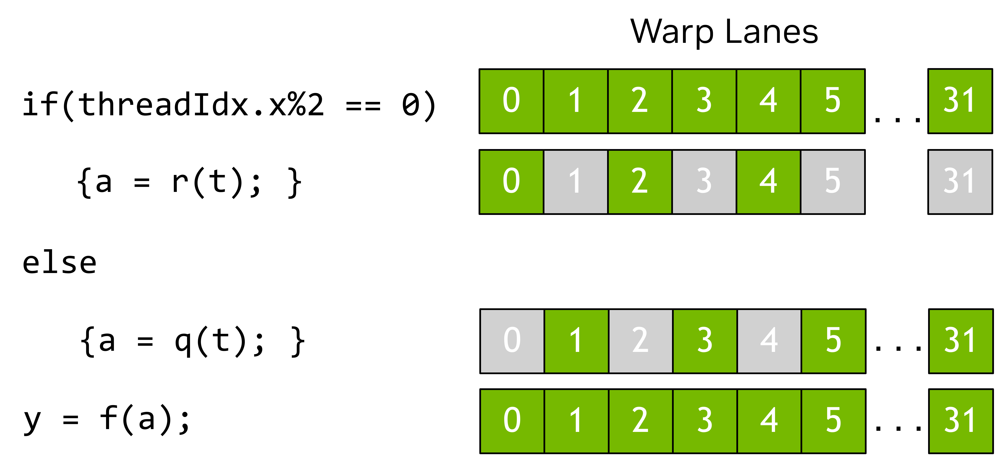
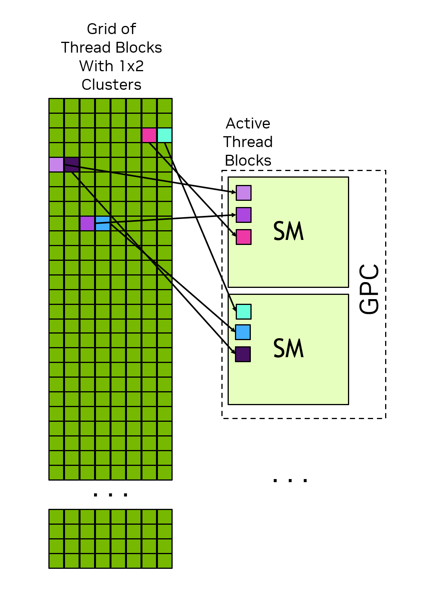
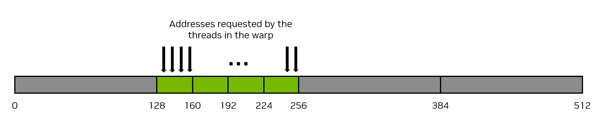
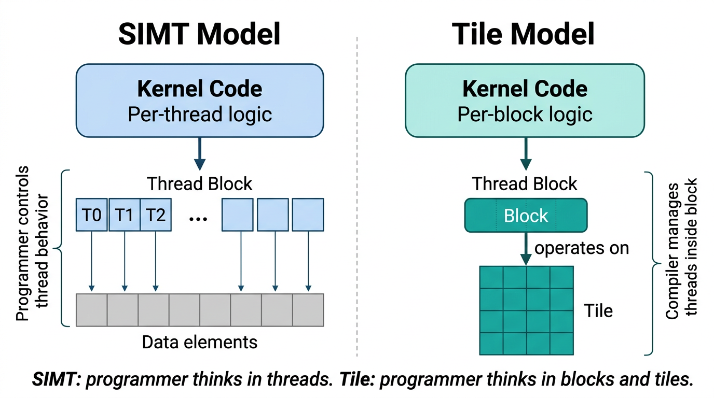
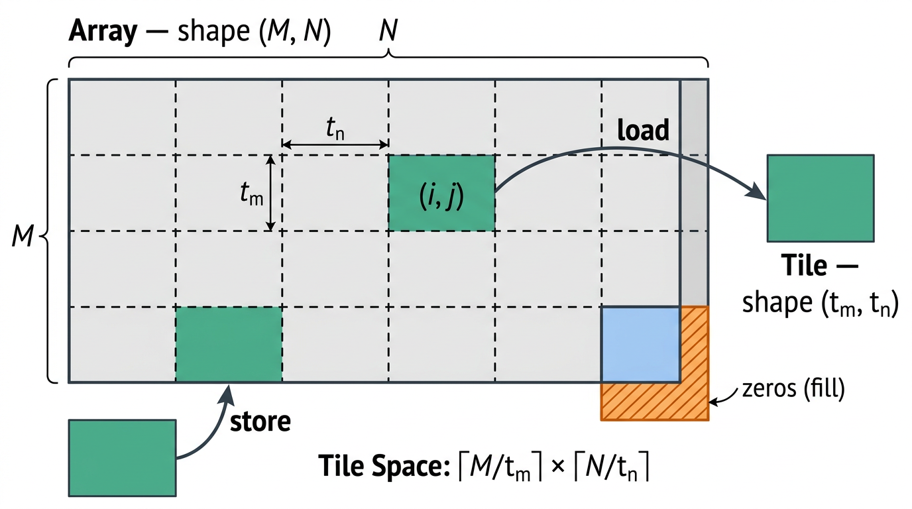
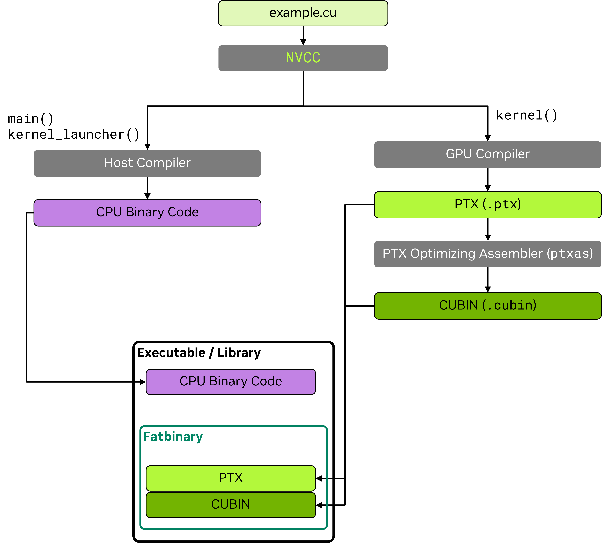
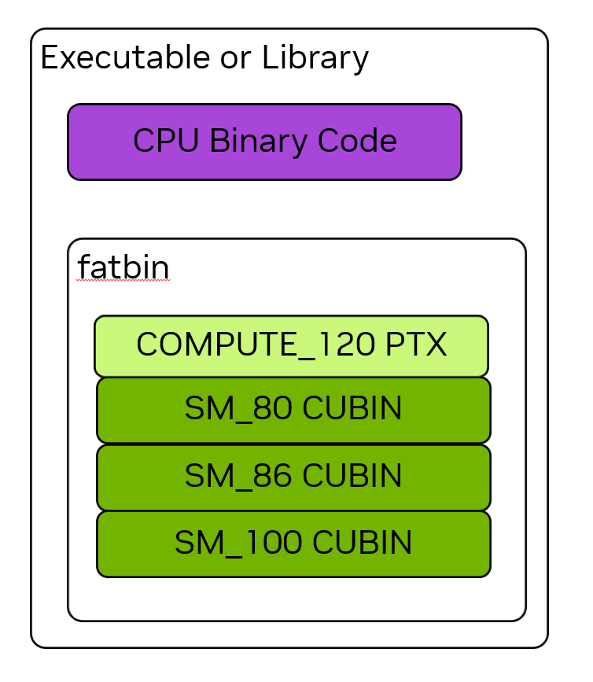

0. How to use this guide
Read Sections 1–4 once, then study Modules 1–3 in Sections 5–7. Run the matching lab after each concept. Sections 8–10 explain newer CUDA 13.3 ideas and performance. Every term is defined where it first matters; the glossary is a review aid, not a substitute for the explanations.
Learn
Read one concept and say the definition aloud in your own words.
Hand execute
After each execution term is introduced, calculate its indices on paper before running code.
Measure
Compile, run, check errors, then change one launch or memory choice at a time.
Your verified local setup
| Component | Detected value | Why it matters |
|---|---|---|
| GPU hardware | NVIDIA GeForce RTX 3060 Laptop GPU | The physical accelerator used to run and verify the examples. |
| CUDA development toolkit | CUDA 13.3 | Provides the compiler, headers, libraries, and developer tools used by the labs. |
| GPU driver | 610.88 | Host software that lets the operating system and applications control the GPU. |
| Lab verification | All twelve CUDA examples passed | Includes a self-contained first program, ordinary CUDA C++, mapped host memory, capability detection, and the newer CUDA Tile C++ model. |
1. From a program to a CPU-and-GPU system
What “GPU” and “CUDA” mean
A Graphics Processing Unit (GPU) is a processor whose design emphasizes performing large amounts of parallel work. GPUs began as specialized hardware for real-time graphics, then gained programmable graphics stages. NVIDIA introduced CUDA in 2006 so programmers could use GPU throughput for general computation without expressing the work as graphics operations.
CUDA, originally expanded as Compute Unified Device Architecture, now names NVIDIA's broader heterogeneous-computing platform: its GPU programming models, software interfaces, compiler toolchain, libraries, and supporting hardware features. A GPU is the physical processor; CUDA is the platform through which software uses compatible NVIDIA GPUs.
Start below CUDA: what is a processor doing?
A program is an ordered description of work. A compiler translates human-written source code into lower-level representations that a target machine or later compiler stage can execute or translate further. After compilation, much of the work is represented as instructions: operations such as “load a value from memory,” “add two values,” “compare,” “branch,” or “store a result.” The values an instruction operates on are its data.
A processor is hardware that repeatedly obtains instructions, determines what they mean, obtains their input data, performs the operation, and records the result. Real processors overlap these steps in pipelines and may execute many operations at once, but this simple loop is the foundation.
The processor cannot do useful work without storage. Registers hold a small number of values immediately used by execution hardware. Memory holds much more code and data, but access usually takes longer. Caches are intermediate storage that try to keep recently or nearby used memory closer to the processor. We will build that hierarchy carefully in Section 4.
Latency and throughput are different goals
Latency is how long one task or operation takes from start to finish. Throughput is how much total work finishes per unit time. Imagine a sports car and a bus. The sports car gets one passenger to a destination quickly; the bus can move far more passengers per trip. Neither is universally “faster”—they optimize different measures.
A modern CPU is primarily designed to minimize the latency of a few complicated instruction streams. It uses large caches and sophisticated control hardware: it predicts which branch a program will take, speculatively begins likely future work, and may execute independent instructions out of their original order while preserving the program's result. A GPU is primarily designed to maximize throughput when the same broad operation can be applied to a great deal of data. It devotes much more of the chip to arithmetic hardware and maintains many threads so that useful work can continue while other work waits.
Why parallel work changes the design
Suppose one addition takes time to obtain its operands from memory. A latency-oriented processor tries hard to make that particular instruction arrive sooner: predict what comes next, search for another independent instruction from the same thread, and keep data in large caches. A throughput-oriented GPU also uses caches, but it has another powerful option: keep many groups of threads ready and execute a different group while the first waits.
This only helps when the application contains parallelism—work that can proceed independently. Adding every pair of elements in two large vectors has abundant parallelism because output element 500 does not need output element 499. Parsing one highly dependent chain of decisions may have little parallelism and can favor a CPU.
One application, two kinds of processor
CUDA assumes a heterogeneous system: a system containing unlike processors, most importantly a CPU and an NVIDIA GPU. An application begins on the CPU. It uses the GPU for selected parts whose parallelism makes acceleration worthwhile.
The CPU and the memory directly associated with it are called the host and host memory. The GPU and the memory directly associated with it are called the device and device memory. On a discrete laptop or desktop GPU, host and device are separate chips connected by an interconnect: a physical link that transports commands and data, commonly PCI Express (PCIe). On a system-on-chip they may share a package and physical memory, but CUDA still uses the host/device roles.
To launch a kernel means to request that the GPU execute that kernel many times in parallel. Each logical execution is a CUDA thread. The host does not call a CUDA kernel like an ordinary CPU function and wait inside the call; a launch normally queues device work and returns control to the CPU before that work completes.
Because launches and many data operations are asynchronous, CPU host code and GPU device code can execute at the same time. High-performance applications try to keep both processors useful while respecting data dependencies; “offloading to the GPU” does not require the CPU to remain idle.
A CPU tries to make a small number of instruction streams finish quickly. A GPU trades some single-thread speed for the throughput to keep many operations in flight. A CUDA application is therefore heterogeneous: CPU host code prepares work; GPU device code performs massively parallel work.
CPU design emphasis
- Low latency for one thread
- Large caches and sophisticated flow control
- Branch prediction and out-of-order execution
- A few powerful cores
GPU design emphasis
- High aggregate throughput
- Many arithmetic units and lightweight threads
- Continued progress by switching among ready groups of work
- Many parallel processing units and high-rate memory movement

You do not always need to write a kernel yourself
A software library is reusable implemented code that an application calls. When a mature GPU library already supplies an operation, it is often faster to develop with and better optimized across GPU generations than a first custom implementation. Examples include cuBLAS for linear algebra, cuFFT for Fourier transforms, cuDNN for deep-neural-network primitives, and CUTLASS for configurable high-performance linear algebra.
A framework provides a larger structure and collection of building blocks for an application; AI frameworks commonly obtain GPU acceleration by calling CUDA libraries underneath. A domain-specific language (DSL) is a language designed for one problem area. Tools such as NVIDIA Warp or OpenAI Triton can compile higher-level descriptions into code that runs on the CUDA platform.
This guide teaches direct CUDA C++ because it exposes the machine model needed for the course. In real projects, first ask whether a tested library or framework already implements the operation. Source: NVIDIA CUDA Programming Guide, §1.1.3.
2. What a GPU physically contains
Read the machine from the outside inward
A chip is a physical piece of silicon containing electronic circuits. Its smallest switching elements are transistors; designers combine them into storage, control logic, arithmetic units, and communication networks. “More transistors” does not by itself tell you performance—the important question is what the design uses them for.
A discrete GPU board or laptop GPU contains the GPU chip and usually its own DRAM chips. DRAM is the large-capacity working memory used for arrays and other program data. Memory controllers move data between that DRAM and the GPU. A device-wide L2 cache sits between memory controllers and the processing units so frequently reused memory may be served without returning to DRAM.
The GPU chip contains many processing units called Streaming Multiprocessors, abbreviated SMs. CUDA work ultimately runs on SMs. To organize a large chip, NVIDIA groups several SMs and nearby hardware into a Graphics Processing Cluster, abbreviated GPC.
What is actually inside an SM?
An SM is not one giant arithmetic unit. It is a coordinated collection of resources:
- The register file is a large on-chip bank of registers. The compiler gives each active CUDA thread some registers for its private variables. Because all resident threads draw from a finite file, high registers-per-thread can reduce how many threads fit simultaneously.
- Warp schedulers examine resident warps and choose those whose next instruction is ready.
- A scoreboard tracks dependencies. If an instruction needs a value that has not arrived, that warp is not ready for that instruction.
- Functional units execute particular kinds of operations: integer arithmetic, floating-point arithmetic, load/store address work, special mathematical functions, tensor/matrix work, and more. The exact mixture varies by architecture.
- The unified data cache supplies physical on-chip storage that can serve as hardware-managed L1 cache and programmer-managed shared memory. The balance can be configurable.
- Instruction fetch/decode hardware obtains and interprets instructions for warps. Instruction caches reduce repeated fetching from farther memory.
What people mean by “CUDA core”
GPU product descriptions often publish a count of “CUDA cores.” That count refers roughly to small scalar arithmetic units capable of executing certain instructions. It is not comparable to a count of CPU cores. A CPU core contains substantial control logic and independently runs full instruction streams; a scalar GPU arithmetic unit is one execution resource used when an SM issues warp instructions.
For reasoning about CUDA scheduling, use these names:
- SM for the processor-like hardware unit that receives blocks and schedules warps.
- Warp for a hardware execution group of 32 CUDA threads.
- Lane for one thread position within that warp-wide instruction.
- Functional unit for the hardware that performs a particular operation.
Why an SM can hold more threads than execute at once
An SM keeps the registers and scheduling state of many warps resident. Resident means their state currently occupies SM resources and they are eligible to run. At a particular instant, only the warps selected by the schedulers issue instructions. The rest may be ready but waiting their turn, or stalled waiting for data or dependencies.
This is the basis of GPU latency hiding. If warp A issues a global-memory load and must wait, the scheduler can issue an instruction from ready warp B. No operating-system context switch is required because both warps’ state is already resident on the SM.
c[i] = a[i] + b[i]. Its load instructions request values from memory. While those requests travel through caches or DRAM, warp A is not ready to add. The scoreboard records that dependency. The scheduler chooses another ready warp. When A’s operands arrive, A becomes ready and can later issue the addition. This is why a GPU benefits from many independent warps.
A model, not a promise about the floorplan
The CUDA programming model deliberately presents a stable conceptual machine: GPU → GPCs → SMs → functional resources. Real products can vary in physical routing, partitions, issue width, cache organization, and internal execution. Correct CUDA code must depend on the documented programming model and queried device properties, not an assumed chip floorplan.
Hierarchy recap
| Unit | Beginner definition | Do not confuse it with |
|---|---|---|
| GPU / device | The accelerator containing multiple GPCs/SMs, shared L2 cache, memory controllers, and device DRAM. | A single “GPU core.” |
| GPC | Graphics Processing Cluster: a hardware grouping of SMs. Thread-block clusters are kept inside one GPC. | A CUDA grid; GPCs are physical. |
| SM | Streaming Multiprocessor: the main GPU execution engine. It contains warp schedulers, register file, L1/shared-memory resources, and functional units. | A scalar ALU lane or a CPU core. An SM is the closer CPU-core analogy. |
| warp scheduler | Selects a ready resident warp and issues its next instruction. Scoreboarding tracks operand readiness and hazards. | The CUDA block scheduler. |
| lane / execution unit | One position in a warp-wide operation. Marketing often calls arithmetic lanes “CUDA cores”; this guide says lane/ALU to avoid CPU-core confusion. | A complete independent CPU core. |
Your RTX 3060 hardware snapshot — now that the terms are defined
Compute capability is NVIDIA’s version number for a GPU’s supported CUDA features and documented hardware limits. Your GPU is compute capability 8.6, written sm_86 when selecting its native binary target.
- 30 SMs
- 32 threads per warp
- Up to 1536 resident threads per SM
- 65,536 physical registers per SM
- 48 KiB maximum shared memory for an ordinary block under the reported device property
- 3 MiB device-wide L2 cache
- No thread-block cluster launch support; clusters require compute capability 9.0 or newer
These are capacity limits, not a promise that every kernel reaches them simultaneously. A kernel’s block size, registers per thread, and shared memory per block determine what can be resident together.

Inside an SM: what happens to an instruction?
- A resident warp has its own logical program counter and execution state.
- The instruction fetch/decode path obtains the warp’s next instruction.
- A scoreboard marks the warp ready only when source operands and required resources are ready.
- A warp scheduler issues the instruction to matching functional units: integer, FP, load/store, special-function, tensor, and so on.
- Active lanes perform the operation; masked lanes do no useful work for that instruction.
- Results are written to registers or memory. Another ready warp can issue while a previous warp waits on a long-latency operation.
This is hardware multithreading for latency hiding. It is not the same as CPU context switching: the state of many warps is already resident in the SM register file, so selecting another ready warp is cheap.
3. Execution hierarchy: thread → warp → block → cluster → grid
The execution hierarchy answers two different questions at once:
- How does the programmer describe many pieces of work? With threads, blocks, clusters, and a grid.
- How does hardware issue that work? SMs receive blocks and execute their threads in warps.
The words are easiest to learn in the order CUDA creates them.
Step 1: the kernel is the common program
A CUDA C++ kernel is a function marked __global__. The kernel text describes what one logical CUDA thread does. When the host launches the kernel, CUDA creates many logical executions of the same code.
__global__ void emptyKernel() {
// Every CUDA thread created by the launch executes this body.
}__global__is a CUDA function qualifier. It says “compile this function for the GPU and allow host code to launch it.” It is not standard C++.voidis the C++ return type. Kernels do not return a value directly; they normally place results in memory supplied through parameters.emptyKernelis a programmer-chosen function name.- The empty parentheses
()mean this kernel receives no parameters. - The braces contain the function body. Text after
//is a comment for humans and is not executed.
All threads run the same kernel code, but built-in coordinates let them select different data. A square kernel, for example, can make each valid thread square one different array element. This is the Single Program Multiple Data (SPMD) programming style: many workers execute one program while their identities direct them to different data.
Step 2: threads are deliberately grouped into blocks
The programmer groups threads into a thread block, often shortened to block. A block is not just a convenient numbering container. It defines an important cooperation boundary:
- Every thread in a block executes on the same SM for that block’s active lifetime.
- The threads share that block’s shared-memory allocation.
- They can meet at a block-wide barrier such as
__syncthreads(). - The block must fit within the thread, register, and shared-memory resources available on one SM.
The host chooses block dimensions at launch time. A block can be one-, two-, or three-dimensional. Dimensions do not create different hardware; they provide coordinates that naturally match a vector, image, matrix, or volume.
dim3 block(16, 16); // 16 × 16 = 256 threads in each block
// threadIdx.x is 0..15; threadIdx.y is 0..15This is host-code configuration, not a launch by itself. dim3 is CUDA's small three-component dimension type with x, y, and z fields. block is an ordinary programmer-chosen variable name. Omitted components default to 1, so dim3 block(16, 16) means (16,16,1). When that variable is later used as the launch's block dimension, device code sees matching threadIdx.x and threadIdx.y coordinates.
Step 3: one launch creates a grid of blocks
All blocks created by one kernel launch form a grid. The host selects a grid dimension and a block dimension inside the triple-chevron syntax:
emptyKernel<<<3, 4>>>(); // 3 blocks × 4 threads = 12 threadsThe values inside <<<...>>> are the kernel's execution configuration. The required first two values specify grid and block dimensions; optional later values specify dynamic shared-memory bytes and a CUDA stream.
emptyKernel names the GPU function. The first launch value, 3, creates three blocks. The second, 4, creates four threads in each block. The final () supplies kernel parameters; it is empty because emptyKernel declared none. The semicolon ends the host C++ statement.
Every block in the grid has the same block dimensions. Blocks receive different blockIdx coordinates, while threads inside each block receive threadIdx coordinates. gridDim reports the number of blocks, and blockDim reports the number of threads per block in each dimension.
A grid may contain far more blocks than the GPU can hold at once. The scheduler assigns blocks to SMs as resources become available. Some blocks execute together; others wait. The programming model does not promise whether block 0, block 1, or block 500 runs first.
blockIdx values is an indexing scheme, not an execution schedule. Printing block IDs may appear ordered in one run and different in another. Correctness cannot depend on that observed order.Why independent blocks make CUDA scalable
If ordinary blocks do not depend on a particular execution order, the same grid can run on a small GPU with few SMs or a large GPU with many SMs. The small GPU processes more waves of blocks; the large GPU processes more blocks concurrently. This property is central to CUDA scalability.
It also explains why a normal block cannot safely wait for arbitrary other blocks in the same grid. Those other blocks may not have been scheduled yet. The usual grid-wide phase boundary is the end of a kernel, followed by another launch in the same stream.
Step 4: hardware divides each block into warps
The programmer specifies threads and blocks, but the SM executes block threads in groups called warps. On NVIDIA GPUs, one warp contains 32 threads. The threads are assigned consecutive lane IDs from 0 through 31 within the warp.
Threads are first linearized within the block with x changing fastest, then y, then z. Consecutive groups of 32 form warps. A 16×16 block contains 256 threads and therefore eight warps.
Same instruction does not mean identical behavior
In the SIMT model, a warp issues a common instruction, but every lane has its own registers, data, addresses, and logical control state. If all lanes follow the same branch, the warp uses its lanes efficiently. If some lanes take one branch and others take another, the warp must cover the required paths with different active masks. This is warp divergence.
if ((threadIdx.x % 2) == 0) {
// even lanes active here; odd lanes masked
} else {
// odd lanes active here; even lanes masked
}This is a code fragment intended to sit inside a kernel. The remainder operator % gives the division remainder, so threadIdx.x % 2 is zero for even x-indices. == compares two values; it is different from the assignment operator =. The if and else bodies are the two possible control paths.
Divergence changes utilization, not the intended result. When the paths reconverge, all relevant lanes continue together. Hardware details such as independent thread scheduling can vary, so code must use documented synchronization rather than assuming informal lockstep communication.
Step 5, only on newer GPUs: clusters group blocks
Compute capability 9.0 and newer adds an optional level between block and grid: the thread-block cluster. A cluster groups adjacent blocks, and CUDA co-schedules all blocks of that cluster inside one GPC. This allows cluster-scoped synchronization and access to the blocks’ combined shared-memory allocations through distributed shared memory.
Specifying a cluster does not replace or resize the grid. Each block retains its ordinary grid blockIdx; it also gains a position within its cluster. Cluster shape and maximum supported size are device-dependent.
Hierarchy recap after the explanation
| Level | Who forms it? | Scope and scheduling |
|---|---|---|
| Thread | Programmer requests threads in a SIMT kernel. | Runs one logical instance of the kernel; has its own indices, registers, and local state. |
| Warp | Hardware groups block threads into sets of 32. | Fundamental SIMT issue group; lanes 0–31 execute a common instruction with an active mask. |
| Thread block / CTA | Programmer chooses 1D/2D/3D dimensions. | All its threads run on one SM, share block shared memory, and can use __syncthreads(). |
| Thread-block cluster | Optional programmer-specified group on CC 9.0+. | Blocks are co-scheduled in one GPC and can cooperate using cluster synchronization and distributed shared memory. |
| Grid | One kernel launch creates a 1D/2D/3D grid of blocks. | Blocks may run in any order, concurrently or serially. A normal kernel must not assume an order. |

The canonical one-dimensional index
__global__ void square(const float* input, float* output, int n) {
int i = blockIdx.x * blockDim.x + threadIdx.x;
if (i < n) {
output[i] = input[i] * input[i];
}
}threadIdx is the thread’s coordinate inside its block. blockIdx is the block’s coordinate inside the grid. blockDim and gridDim are the corresponding dimensions. Each is a built-in dim3-like value with .x, .y, and .z.
const float* inputis a pointer to input floating-point values.constpromises this kernel will not modify them.float* outputis a pointer to writable result values. Square brackets select one array element.int nis the number of valid elements.int icreates one private integer variable for each CUDA thread.blockIdx.x * blockDim.xcounts all threads belonging to earlier blocks; addingthreadIdx.xselects this thread's global element.if (i < n)is the bounds check. Extra threads in the last block execute the test but do not touch the arrays.
Hand execute: N = 10, 4 threads per block
The host launches blocks = ceil(10/4) = 3. Twelve threads exist, but the bounds check permits only indices 0–9.
blockIdx.x | threadIdx.x | i = block*4 + thread | Action |
|---|---|---|---|
| 0 | 0,1,2,3 | 0,1,2,3 | All valid |
| 1 | 0,1,2,3 | 4,5,6,7 | All valid |
| 2 | 0,1,2,3 | 8,9,10,11 | 8,9 valid; 10,11 return/do nothing |
Two-dimensional index
int x = blockIdx.x * blockDim.x + threadIdx.x;
int y = blockIdx.y * blockDim.y + threadIdx.y;
if (x < width && y < height) {
int linear = y * width + x; // row-major memory
}This fragment belongs inside a 2D kernel. && means both bounds must be true. A C/C++ array is stored linearly, so y * width skips the complete rows before row y, and + x moves to column x. For width=6, coordinate (x=2,y=3) becomes element 3*6+2=20.
Warps are cut within each block
Threads are linearized with x varying fastest, then y, then z. Consecutive groups of 32 form warps. A 40-thread block has warp 0 with threads 0–31 and warp 1 with threads 32–39; 24 lanes in the second warp are permanently inactive. That is why block sizes are usually multiples of 32.

Blocks do not have an execution order
A grid can contain millions of blocks while a GPU has only tens or hundreds of SMs. The hardware assigns blocks as resources become available. A correct normal kernel must remain correct if blocks execute in any order, simultaneously, or one after another.
Thread-block clusters
On compute capability 9.0+, adjacent blocks can be grouped into a 1D/2D/3D cluster. Every block of a cluster is co-scheduled inside one GPC. Cooperative Groups supplies cluster synchronization and access to distributed shared memory: the shared-memory allocations of all cluster blocks, addressable across the cluster. Cluster size is hardware dependent.

blockIdx. Source: NVIDIA CUDA Programming Guide, §1.2.2.1.1.4. Memory, caching, and visibility from first principles
Why a memory hierarchy exists
Processors need data faster than large memories can usually deliver it. Storage technologies trade capacity, cost, and access speed. Registers are tiny and very close to execution hardware. On-chip caches and shared memory are larger but still limited. GPU DRAM holds gigabytes, but reaching it costs far more time and energy than using an already available register.
A memory address identifies a location in an address space. A load asks for the value at an address; a store writes a value to an address. The CUDA memory model gives different address spaces different visibility and behavior. The same word “memory” therefore covers several physically and logically different things.
Before CUDA memory spaces: how a cache works
A cache is hardware-managed storage that keeps copies of data from a farther memory. Program code normally names the original memory address; hardware checks whether a nearby cached copy is available.
- A thread requests an address.
- The cache checks identifying metadata called a tag to determine whether it currently contains the memory region holding that address.
- If present, the request is a cache hit and can be served from that cache level.
- If absent, it is a cache miss. The request proceeds to a farther cache or DRAM, and the returned region may replace an existing cache entry.
Caches move data in fixed-size regions commonly called cache lines or sectors, not one arbitrary byte at a time. Exact units depend on the architecture and transaction. Fetching nearby data together helps when programs exhibit:
- Temporal locality: data used recently is likely to be used again soon.
- Spatial locality: addresses near a recently used address are likely to be used soon.
A[100], hardware may fetch a whole aligned region containing nearby elements. A later load of A[101] may hit that region. If many unrelated accesses displace it first, the later load may miss. The program names A’s addresses either way; the cache decides whether it can supply a copy.
L1, L2, and constant cache on a GPU
Each SM has a nearby L1 data cache. On current architectures, L1 and shared memory use a configurable pool of physical on-chip storage called the unified data cache. “Unified” here means two uses share an on-chip resource.
The GPU also has a larger L2 cache shared across all SMs. When an SM’s request is not satisfied near the SM, L2 may satisfy it before device DRAM is accessed. Because all SMs connect through L2, it can capture device-wide reuse that a per-SM L1 cannot.
SMs also have a constant cache for read-only constant data and often kernel parameters. It is especially effective when lanes of a warp request the same constant address because one value can be broadcast.
Cache presence does not remove the need for synchronization. A cache helps obtain data quickly; the CUDA memory model and synchronization operations determine when another thread is allowed to rely on a write becoming visible. Performance locality and correctness ordering are separate concerns.
Registers: the first home for thread variables
When possible, the compiler places a thread’s scalar variables in registers. Registers are not manually addressed like an array in ordinary CUDA C++; the compiler maps program values to them. Every active thread needs its own logical register values, allocated from the finite register file of its SM.
More registers can make a thread faster by keeping values close, but they consume SM capacity. If one block’s threads collectively require many registers, fewer blocks or warps may be resident. If the compiler cannot keep values in registers, some may spill into local memory.
nvcc -Xptxas=-v and profiling tools.Local memory: private address space, not nearby storage
Local memory is an address space private to one thread. It commonly holds register spills, large automatic arrays, or variables that require addressable storage. Despite its name, it is generally backed by device memory and served through caches, so it can be much slower than a register.
Shared memory: an explicit block scratchpad
Shared memory is programmer-managed, on-chip storage allocated per block. Every thread of that block names the same shared array and can exchange values through it. A typical pattern is:
- Each thread loads one or more values from global memory into a shared array.
- The block executes
__syncthreads()so all loads are complete before any thread consumes its neighbors’ values. - Threads reuse the on-chip values for computation.
- Results are written to global memory.
Shared memory is fast when used well because software controls reuse and access. It is finite, requires explicit synchronization, and is divided into independently serviced partitions called banks. More shared memory per block can reduce the number of blocks resident on an SM. The access-pattern section below explains bank conflicts.
Global memory: device-wide addressability
Global memory is the CUDA address space normally backed by the GPU’s attached DRAM. Any thread on the device can address a valid global allocation, which makes it the normal home of large input and output arrays. “Global” describes device-wide addressability; it does not mean every access is instantly visible in every thread without ordering.
Global memory offers high total bandwidth, but an individual access can have long latency. GPUs cope by combining nearby warp requests into fewer transactions—a behavior called coalescing—and through caches, data reuse, asynchronous movement, and enough resident warps to hide waiting time.
In a multi-GPU system, each GPU normally has its own global-memory DRAM. “Global” means global to the threads and engines of that GPU, not automatically global to every CPU and GPU in the computer.
PCIe and NVLink: paths between processors, not memory types
Explicit copies, direct remote loads, automatic data movement, and multi-GPU transfers may all travel over an interconnect. NVLink often provides more bandwidth and lower latency than the corresponding PCIe connection, but it remains a transport mechanism. It does not by itself specify who allocated the memory, which processor may dereference a pointer, whether caches are coherent, or whether data must migrate.
Host memory, device memory, and explicit data movement
In the basic discrete-GPU model, a pointer returned by ordinary host allocation such as new or malloc refers to CPU-attached system memory. A pointer returned by cudaMalloc refers to GPU-attached device memory. Ordinary CPU code uses the first allocation; GPU kernels use the second.
cudaMemcpy explicitly transfers bytes between host and device allocations. CUDA also supports copies within one GPU and, when the hardware and software permit peer access, directly between one GPU and another GPU's allocation. Transfers can be expensive, so a tiny GPU computation may lose more time to movement and launch overhead than it saves in arithmetic.
Before the first memory program: C++ notation CUDA relies on
- A pointer stores a memory address.
float* dValuesdeclares a pointer intended to refer to floating-point values. The*is part of the pointer type here. nullptrmeans the pointer does not currently point to an allocation. Starting withnullptravoids an uninitialized, meaningless address.- The address-of operator
&asks for the address of a CPU variable.cudaMalloc(&dValues, bytes)needs that address so it can write the newly allocated device pointer intodValues. sizeof(float)is the number of bytes used by onefloat. CUDA allocation and copy functions take byte counts, soN * sizeof(float)reserves room forNvalues.- Names beginning with
handd, such ashValuesanddValues, are only a human convention for “host” and “device.” CUDA does not assign meaning to those letters.
A complete first memory program: add one to four values
This is a complete .cu file rather than a fragment. It intentionally uses only four values and one four-thread block so every thread can be traced by hand.
hValuesCPU memory→ copy
dValuesGPU memory→ kernelchanged
dValues→ copychanged hValues#include <cuda_runtime.h> // CUDA Runtime types and functions
#include <cstddef> // std::size_t, a type for byte counts
#include <cstdio> // std::printf and std::fprintf
#include <cstdlib> // std::exit and EXIT_FAILURE
void requireCuda(cudaError_t status, const char* operation) {
if (status != cudaSuccess) {
std::fprintf(stderr, "%s failed: %s\n",
operation, cudaGetErrorString(status));
std::exit(EXIT_FAILURE);
}
}
__global__ void addOne(float* values, int n) {
int i = blockIdx.x * blockDim.x + threadIdx.x;
if (i < n) values[i] += 1.0f;
}
int main() {
constexpr int N = 4;
constexpr int THREADS = 4;
float hValues[N] = {10.0f, 20.0f, 30.0f, 40.0f};
float* dValues = nullptr;
const std::size_t bytes = N * sizeof(float);
requireCuda(cudaMalloc(&dValues, bytes), "cudaMalloc");
requireCuda(cudaMemcpy(dValues, hValues, bytes,
cudaMemcpyHostToDevice), "copy to GPU");
addOne<<<1, THREADS>>>(dValues, N);
requireCuda(cudaGetLastError(), "addOne launch");
requireCuda(cudaDeviceSynchronize(), "addOne execution");
requireCuda(cudaMemcpy(hValues, dValues, bytes,
cudaMemcpyDeviceToHost), "copy to CPU");
requireCuda(cudaFree(dValues), "cudaFree");
dValues = nullptr; // cudaFree releases the allocation but does not clear this pointer.
for (int i = 0; i < N; ++i) std::printf("%.0f ", hValues[i]);
std::printf("\n"); // expected: 11 21 31 41
return 0;
}nullptr after cudaFree?
cudaFree(dValues) releases the device allocation, but it receives the pointer by value and therefore cannot change the host variable dValues. Immediately afterward, dValues still contains the old address, but that address is no longer valid: it is a dangling pointer. Setting dValues = nullptr does not free anything a second time; it simply marks the host variable as pointing nowhere. This reset is defensive good practice when the variable remains in scope. At the very end of main it is not required for resource cleanup, but showing it establishes the safer habit. Never copy through, launch a kernel with, or otherwise dereference dValues after it has been freed.
The runnable source is 11_add_one_walkthrough.cu. It contains the same program plus an explicit PASS/FAIL validation, so you can compile it without reconstructing code from the page.
cd GPU_Study_Guide\examples
nvcc -std=c++17 -arch=native 11_add_one_walkthrough.cu -o first_cuda.exe
.\first_cuda.exenvcc is CUDA's compiler driver. -std=c++17 selects the C++17 language version. -arch=native generates GPU code for the GPU in this machine. -o first_cuda.exe names the output program. The final PowerShell command runs that program from the current directory.
#includemakes declarations from a header visible to the compiler. Angle brackets mean “find an installed/system header.” They do not allocate memory or run code.<cuda_runtime.h>declares CUDA Runtime items such ascudaError_t,cudaMalloc, andcudaMemcpy.<cstddef>suppliesstd::size_t, an unsigned integer type intended for object sizes and byte counts.<cstdio>supplies formatted printing.stdoutis the normal output stream;stderris the error stream.<cstdlib>supplies program-exit facilities.EXIT_FAILUREis a standard non-success exit status.const char* operationis a pointer to a read-only text label such as"cudaMalloc".!=means “not equal.”- CUDA Runtime calls return a
cudaError_tstatus.cudaSuccessmeans the operation succeeded;cudaGetErrorStringtranslates an error status into readable text.requireCudastops immediately instead of allowing the program to continue with invalid memory.
- The CPU begins in
main.constexprdeclares compile-time constants. It creates four host values and an empty device-pointer variable. cudaMallocreserves 16 device bytes when a float is four bytes. It changesdValuesto hold the new GPU address; it does not initialize those bytes.- The first
cudaMemcpycopies the four CPU values to GPU memory. Destination comes first, source second.cudaMemcpyHostToDevicestates the direction. addOne<<<1,4>>>creates one block of four threads. Threads 0–3 calculate indices 0–3 and each update one element.- Inside the kernel,
values[i] += 1.0fmeans “read this element, add one, and write it back.” Thefsuffix makes the numeric literal afloat. - A launch is asynchronous.
cudaGetLastErrorchecks whether the launch request was valid;cudaDeviceSynchronizewaits and reports errors that occurred while the kernel actually ran. - The second
cudaMemcpycopies the changed values back to the host array.cudaFreereleases the device allocation. The CPU prints11 21 31 41.
What is cuda_check.cuh?
Most runnable labs use #include "cuda_check.cuh" to avoid repeating the longer requireCuda function in every file. A header is a source file intended to be included by other source files. The extension .cuh conventionally means “a header that may contain CUDA C++”; the compiler does not give the letters magical behavior. Quotes tell the preprocessor to look for a project-local header.
CUDA_CHECK is a project-defined preprocessor macro, not a CUDA keyword or Runtime function. Before normal C++ compilation, the preprocessor substitutes its error-checking code around the call. Conceptually:
CUDA_CHECK(cudaMalloc(&dValues, bytes));
// means approximately the same thing as:
requireCuda(cudaMalloc(&dValues, bytes), "cudaMalloc");The actual header additionally reports __FILE__ and __LINE__, predefined compiler values identifying where the failed call appeared. In a macro definition, #call converts the supplied call into readable text for the error message. You may use the simpler function while learning; the macro exists only to improve diagnostics and reduce repetition. Read the commented source in cuda_check.cuh after the complete program above makes sense.
Decode the remaining syntax in cuda_check.cuh
#pragma oncetells the compiler to process this header only once per source file, even if several included headers lead back to it.inlineallows the small helper function to be defined in a header included by multiple programs without creating conflicting function definitions.#define CUDA_CHECK(call) ...declares the macro and names its placeholdercall.#callturns the supplied expression into text;__FILE__and__LINE__are filled in by the compiler.- The backslash at the end of the
#defineline continues that macro definition onto the following source line. It is preprocessing syntax, not a CUDA memory or execution feature.
Pageable, pinned, and mapped host memory
Operating systems manage memory in fixed-size regions called pages. Memory returned by ordinary CPU allocation is usually pageable: the operating system may move its physical pages or temporarily place them on storage. Page-locked, or pinned, host memory is kept at stable physical locations while pinned. CUDA can transfer pinned memory efficiently using direct memory access (DMA), in which a device-transfer engine moves bytes without making the CPU execute a load and store for every value. Asynchronous copies require suitable pinned host buffers. Pinning too much reduces memory available to the operating system, so it is a limited resource—not a default replacement for every host allocation.
Mapped host memory is pinned CPU memory for which CUDA also provides a device-visible address. A kernel can then load or store that host allocation directly across PCIe or NVLink instead of first copying it into GPU DRAM. This is often called zero-copy: it avoids an explicit staging copy, but it does not mean zero traffic or zero cost.
hMappedCPU memory↔ PCIe / NVLinkGPU kernel using
dViewrequireCuda helper from the complete program above.
__global__ void scaleMapped(float* values, int n) {
int i = blockIdx.x * blockDim.x + threadIdx.x;
if (i < n) values[i] *= 3.0f;
}
int main() {
constexpr int N = 4;
const std::size_t bytes = N * sizeof(float);
float* hMapped = nullptr; // CPU view
float* dView = nullptr; // GPU view of the same host allocation
requireCuda(cudaSetDeviceFlags(cudaDeviceMapHost), "enable mapping");
requireCuda(cudaHostAlloc(&hMapped, bytes, cudaHostAllocMapped),
"allocate mapped host memory");
requireCuda(cudaHostGetDevicePointer(&dView, hMapped, 0),
"obtain device view");
for (int i = 0; i < N; ++i) hMapped[i] = static_cast<float>(i + 1);
scaleMapped<<<1, 4>>>(dView, N);
requireCuda(cudaGetLastError(), "scaleMapped launch");
requireCuda(cudaDeviceSynchronize(), "scaleMapped execution");
for (int i = 0; i < N; ++i) std::printf("%.0f ", hMapped[i]);
std::printf("\n"); // expected: 3 6 9 12
requireCuda(cudaFreeHost(hMapped), "cudaFreeHost");
return 0;
}cudaSetDeviceFlags(cudaDeviceMapHost)requests host-memory mapping support before a CUDA context is created.cudaHostAllocallocates host memory. The flagcudaHostAllocMappedasks CUDA to pin it and make a device mapping available.hMappedanddVieware two pointer views of the same CPU-owned allocation. CPU code initializes throughhMapped; the kernel receivesdView.static_cast<float>explicitly converts the integeri+1into a floating-point value.- There is no
cudaMemcpy. Kernel loads and stores travel to host memory through the mapping, which is why “no explicit copy” does not mean “no data transfer.” - After synchronization, the CPU reads the changed values through
hMapped.cudaFreeHost, notcudaFree, releases memory allocated bycudaHostAlloc.
Mapped access serves the kernel's memory operations over the interconnect. That has higher latency and usually lower bandwidth than well-coalesced access to local GPU DRAM, and repeatedly touching the same remote data repeats interconnect traffic. It can still be useful for small, one-pass, producer/consumer, or integrated-system workloads. Check the device's canMapHostMemory capability before relying on it.
Run the complete checked example in 10_mapped_host_memory.cu. It uses 17 elements and eight threads per block, so you can reuse the three-block hand calculation from vector addition while changing only where the data is stored.
When CPU and GPU share physical memory
Some integrated GPUs and systems-on-chip place CPU and GPU beside the same physical DRAM. Some tightly coupled CPU–GPU platforms provide coherent access to system-allocated memory over links such as NVLink-C2C, where C2C means chip-to-chip. These designs can avoid some physical copies, but the host/device roles still exist, and supported allocation, synchronization, caching, and performance behavior remains platform-specific.
Conversely, a discrete GPU with its own DRAM may still access selected CPU allocations through mapped memory or system-supported shared-memory features. Therefore, “physically one memory,” “one virtual address,” and “both processors may access it” are three separate claims.
Unified virtual addressing: coordinated addresses, not automatic sharing
Currently supported CUDA systems use a unified virtual address space, commonly called Unified Virtual Addressing (UVA). CPU memory and each GPU's memory occupy distinct ranges in one coordinated virtual address space, allowing CUDA to determine which allocation or processor owns a given address. In a multi-GPU system, each GPU's memory range is distinct.
Unified Memory: one allocation, managed placement
cudaMallocManaged creates a Unified Memory allocation that CPU and GPU code can access under the platform's support rules. CUDA's runtime, driver, operating system, and hardware cooperate to make the data reachable. Depending on the system, that may mean migrating pages to the accessing processor, mapping remote memory, or accessing physically shared/coherent memory without migration.
Coherence means the memory system maintains a defined relationship among copies held in processor caches so permitted accesses can observe updates according to the platform's memory rules. Coherence does not remove data races and does not replace CUDA synchronization: the CPU must still wait before consuming a kernel's results, and concurrent conflicting CPU/GPU accesses require supported synchronization.
Unified Memory removes much explicit copy bookkeeping, but not the cost of placement or transport. If CPU and GPU alternately touch the same pages, migration or remote access can become expensive. Best performance usually comes from keeping each phase's data near the processor using it.
CUDA reports these as separate device capabilities because one does not imply the others:
unifiedAddressing: the device participates in UVA.canMapHostMemory: the device can use mappings of suitable pinned host allocations.managedMemory: the device supports CUDA managed allocations.concurrentManagedAccess: the platform supports the documented forms of simultaneous CPU/GPU access to managed memory. A false value means code must not assume such concurrent access.pageableMemoryAccess: the device can directly access supported pageable host allocations. This is broader than explicitly mapping a pinned allocation and is not available on every platform.
Visibility, lifetime, and location are three separate properties
When learning a memory space, ask three questions:
- Who can name it? One thread, one block, one cluster, the device, or the host?
- How long does it exist? For a function call, kernel, block, allocation, or application?
- Where is it normally stored? Registers, SM on-chip storage, GPU DRAM, or system DRAM?
These axes prevent misleading shortcuts. For example, local memory is thread-private but physically backed by device memory; shared memory is block-visible and physically on-chip; global memory is device-visible and physically in DRAM.
Memory-space recap after the explanation
Performance depends on where data lives, how many threads can see it, and how efficiently a warp accesses it. “Closer” storage is usually smaller and faster, but exact latency is architecture- and access-dependent.
| Memory / storage | Physical idea | Visibility / lifetime | Typical use |
|---|---|---|---|
| Registers | Per-SM register file, compiler allocated | Private logical state per thread; kernel lifetime | Scalars and frequently used temporaries |
| Local memory | Thread-private address space, usually backed by device memory and cached | Private per thread | Register spills, large/thread-indexed local arrays |
| Shared memory | Programmer-managed on-chip storage in the SM unified data cache | Visible to a block; cluster DSM extends reach on CC 9.0+ | Reuse, tiling, cooperation, reductions, halos |
| L1 / unified data cache | Per SM; shares physical resources with shared memory on modern GPUs | Hardware-managed cache for that SM | Recent global/local loads |
| L2 cache | Larger cache shared by all SMs | Device-wide hardware-managed cache | Cross-SM temporal locality, DRAM traffic reduction |
| Global memory | GPU-attached DRAM | All threads/device engines; allocation lifetime | Large input/output arrays |
| Constant memory/cache | Read-only device address space with per-SM cache | Grid-wide read-only kernel data | Small values read uniformly by a warp |
| Texture/surface paths | Specialized cached access semantics | Device-visible objects | Spatial access, interpolation or surface operations; less central in beginner CUDA |
| Pageable host memory | Ordinary CPU allocation in system DRAM | CPU; OS may move/page its physical storage | General application data |
| Pinned host memory | CPU memory locked at stable physical pages | CPU; CUDA transfer engines can use it efficiently | Staging and asynchronous transfers |
| Mapped host memory | Pinned CPU memory exposed through a device-visible mapping | CPU and supported GPU; GPU accesses travel over the interconnect | Small or one-pass zero-copy access |
| Unified Memory | CUDA-managed allocation; physical placement depends on platform and access | CPU and supported GPUs under CUDA rules | Simplified data management with locality still important |
Compare explicit allocation with Unified Memory
The complete addOne program used two arrays: hValues in host memory and dValues in device memory. It explicitly copied host → device before the kernel and device → host afterward. Starting with the same imports, requireCuda, and addOne kernel, the managed version of main is:
int main() {
constexpr int N = 4;
const std::size_t bytes = N * sizeof(float);
float* values = nullptr;
requireCuda(cudaMallocManaged(&values, bytes), "cudaMallocManaged");
// CPU initializes the managed allocation.
for (int i = 0; i < N; ++i) values[i] = 10.0f * (i + 1);
// GPU receives the same pointer; CUDA makes its pages accessible.
addOne<<<1, 4>>>(values, N);
requireCuda(cudaGetLastError(), "addOne launch");
requireCuda(cudaDeviceSynchronize(), "addOne execution");
// CPU reads only after the GPU has completed.
for (int i = 0; i < N; ++i) std::printf("%.0f ", values[i]);
std::printf("\n"); // expected: 11 21 31 41
requireCuda(cudaFree(values), "cudaFree");
return 0;
}cudaMallocManagedcreates one managed allocation rather than a separate host array and device allocation.- The CPU and kernel use the same pointer variable,
values, so both explicitcudaMemcpycalls disappear. - The synchronization remains essential. A shared pointer does not mean the CPU may read while the kernel is still modifying the data.
- CUDA may still migrate pages or serve accesses remotely. The code is simpler, but data movement has not become free.
A complete shared-memory kernel: reverse eight values
This kernel is deliberately limited to one block of eight threads. Each thread first copies one global-memory value into a shared array. After the barrier, it reads the element written by the thread at the opposite position.
__global__ void reverseEight(const int* input, int* output) {
__shared__ int tile[8];
int t = threadIdx.x;
tile[t] = input[t]; // thread t writes shared element t
__syncthreads(); // wait until all eight shared writes are complete
output[t] = tile[7 - t];
}
// Host launch: exactly one block containing eight threads.
reverseEight<<<1, 8>>>(dInput, dOutput);- Thread 0 writes
tile[0] = input[0], then later readstile[7]. - Thread 1 writes
tile[1], then readstile[6]. - Thread 6 writes
tile[6], then readstile[1]. - Thread 7 writes
tile[7], then readstile[0].
__shared__ creates one eight-integer array for the whole block, not one array per thread. __syncthreads() is CUDA's built-in block barrier; its empty parentheses mean it takes no arguments. dInput and dOutput stand for device pointers that the omitted host setup allocates and fills using the explicit-memory sequence learned above. Without the barrier, thread 0 could read tile[7] before thread 7 had written it. Run the complete allocation, copy, launch, validation, and cleanup code in 05_shared_reverse.cu.
__syncthreads(). Putting it in a branch taken by only some threads can hang or cause undefined behavior.Caches versus programmer-managed memory
L1/L2 are transparent: hardware decides what remains cached. Shared memory is explicit: your code stages and synchronizes data. Use shared memory when reuse and access order are predictable enough to justify the extra instructions and barriers. Otherwise, caches may already do the job.
Coalescing: make a warp access nearby addresses

For row-major arrays, map consecutive threadIdx.x values to consecutive x positions. This is one reason the usual index formula performs well for vectors.
Shared-memory banks
Shared memory is divided into banks so a warp can service many addresses in parallel. If several active lanes request different addresses in the same bank, requests serialize: a bank conflict. A broadcast of one address is a special efficient case. Padding a 2D shared array, for example tile[32][33] instead of tile[32][32], often breaks a conflict-prone stride.
5. Module 1 — processor and GPU foundations
Learning target: explain why GPUs exist, identify forms of parallelism, relate CPU and GPU pipelines, and distinguish a programming model from a hardware execution model.
5.1 CPU performance ideas that GPUs build on
GPU architecture is easier to understand if you first know what a modern CPU is trying to improve. Both CPUs and GPUs must fetch instructions, obtain operands, execute operations, access memory, and preserve program correctness. They devote hardware to those jobs in different proportions.
Pipelining
Without a pipeline, a processor could finish every step of one instruction before starting the next. A pipeline overlaps stages of different instructions, much like an assembly line. While instruction A executes, instruction B can decode and instruction C can be fetched. Once filled, the pipeline may complete work much more frequently even though one instruction still passes through several stages.
A simple teaching pipeline is fetch → decode → execute → memory → writeback. Modern CPUs add structures and stages such as register renaming and scheduling. Module 1 uses the broader front-end/fetch → decode → rename/register access → schedule → execute → writeback view. GPU SMs also have instruction fetch, decode, scheduling/scoreboarding, execution, and writeback behavior, but work is organized around resident warps.
Dependencies and instruction-level parallelism
Two instructions are independent when neither needs the other’s result. They may execute at the same time on different functional units. They are dependent when one consumes a value produced by the other and must wait.
// Independent: both can start if two add units are available.
r1 = r2 + r3;
r4 = r5 + r6;
// Dependent: the second needs r1 from the first.
r1 = r2 + r3;
r4 = r1 + r6;Instruction-level parallelism (ILP) is the amount of independent instruction work available within an instruction stream. A superscalar processor has hardware that can issue more than one instruction per cycle when independent instructions and suitable functional units exist. IPC, instructions per cycle, measures the resulting issue/completion rate under a defined interpretation.
In-order and out-of-order scheduling
An in-order processor generally considers instructions in program order; a blocked instruction can prevent younger independent work from passing it. An out-of-order CPU tracks a window of instructions and allows ready independent operations to execute before older stalled ones, while eventually making the program appear to obey its required architectural behavior.
A GPU SM also chooses ready work, but a central strategy is different: it has many resident warps and can choose an instruction from another warp when one warp is stalled. This exploits thread-level parallelism (TLP) in addition to ILP.
Branches, prediction, and deeper pipelines
A branch selects the next instruction path. A CPU may predict the branch so it can keep a deep pipeline busy before the condition is resolved. A wrong prediction discards speculative work and redirects the pipeline. Deeper pipelines can support high clock frequencies, but a misprediction can waste more in-flight work.
GPUs encounter a related but different issue when lanes of one warp choose different paths: warp divergence. That is not the same mechanism as a CPU branch misprediction. A GPU may still predict or optimize control internally, but the CUDA-visible concern is active-lane utilization across divergent paths.
Caches and multithreading
A CPU invests heavily in caches because reducing the average wait for one thread is central to latency. A GPU also caches data, but additionally keeps many warp contexts resident so another warp can run during a miss. This hardware multithreading is cheap relative to operating-system thread switching because warp state is already represented in SM resources.
Finally, both systems replicate processing hardware. A multicore CPU has multiple CPU cores; a GPU has multiple SMs. More physical processors help only when software exposes independent work and avoids bottlenecks such as serial regions or memory bandwidth.
Recap after the explanation
| Concept | Definition | GPU connection |
|---|---|---|
| Pipeline | Break instruction processing into stages such as fetch, decode, rename/register access, schedule, execute, and writeback. | SMs also fetch, decode, schedule, and execute, but scheduling is warp-oriented. |
| Instruction-level parallelism (ILP) | Independent instructions from one thread can overlap. Superscalar processors may issue multiple instructions per cycle. | Each GPU thread can have ILP, while the SM also exploits thread-level parallelism across many warps. |
| Out-of-order execution | A CPU searches a window for ready instructions instead of strictly following program order. | GPUs more prominently hide stalls by issuing instructions from another ready warp; exact SM internals are architecture-specific. |
| Deeper pipeline / frequency | More stages can allow a higher clock but increase branch-misprediction and hazard costs. | GPU throughput is not explained by clock rate alone; parallelism and bandwidth dominate. |
| Cache hierarchy | Stores recently used data closer to processors to reduce average access time. | GPUs use caches plus explicit shared memory to handle bandwidth and reuse. |
| Multithreading | Multiple software instruction streams share processor resources. | An SM keeps many warps resident and rapidly selects ready ones to hide latency. |
| Multiprocessor | Replicates processors/cores to run work concurrently. | A GPU replicates SMs; a grid supplies enough blocks to occupy them. |
5.2 Amdahl’s law
If fraction P can be parallelized, fraction S = 1 − P is serial, and N processors accelerate only the parallel part, ideal speedup is:
Speedup(N) = 1 / (S + P/N)Example: if 90% is parallel and 10% serial, even infinitely many processors cap speedup at 1/0.10 = 10×. With 100 processors: 1/(0.10 + 0.90/100) ≈ 9.17×.
5.3 Task decomposition versus data decomposition
Task decomposition
Different workers perform different operations. Example: one computes a sum while another computes min/max over the same array.
Data decomposition
Workers perform the same operation on different pieces. Example: each CUDA thread adds one vector element; partial results may later be reduced.
GPU kernels usually favor abundant regular data decomposition, although separate kernels, blocks, warps, or pipelines can express task parallelism.
5.4 Flynn’s taxonomy and the terms people mix up
| Term | Meaning | Example |
|---|---|---|
| SISD | Single instruction stream, single data stream | Simple scalar processor |
| SIMD | One instruction explicitly operates on a fixed-width vector of data | CPU AVX instruction |
| MISD | Multiple instruction streams process the same data; rare as a general machine model | Some fault-tolerant or pipeline interpretations |
| MIMD | Multiple independent instruction streams and data | Multicore CPUs, separate GPU warps/SMs at a broad level |
| SPMD | Programmer launches many instances of the same program on different data | CUDA kernel threads use indices to choose elements |
| SIMT | Hardware groups scalar-looking threads and issues a common instruction with per-lane state and masking | A CUDA warp |
SPMD is the programming style; SIMT is the warp execution model. CUDA source looks like one scalar program per thread. Hardware groups those threads into warps.
5.5 GPU pipeline and warps
A warp has 32 lanes on current NVIDIA GPUs. One warp instruction is issued with an active mask. The scheduler can select another ready warp when operands are unavailable, a load misses, or a dependency stalls. A wavefront is the analogous AMD term and may have a different width; the course uses warp/wavefront loosely, but CUDA specifically uses warp.
warpSize. NVIDIA warps have been 32 for many generations, but portable explanations should identify it as a device property.5.6 GPU evolution
- Fixed-function graphics: geometry and raster/pixel stages were specialized hardware.
- Programmable shaders: vertex/pixel code became programmable.
- Unified shaders and CUDA: common programmable processors enabled general-purpose GPU computing.
- Compute features: L1/L2 caches, double precision, integer operations, atomics, larger memory, and better programmability expanded HPC use.
- High-bandwidth and specialized units: HBM, tensor cores, reduced-precision formats, TMA, and fast interconnects target AI and data-intensive computation.
Specific product names and unit counts age quickly. The stable foundation is the hierarchy, execution model, memory behavior, and toolchain abstraction.
Module 1 source map
6. Module 2 — parallel programming patterns
Learning target: recognize concurrency, select a decomposition and pattern, then reason about sharing, scheduling, synchronization, and communication. These CPU/MPI ideas directly explain CUDA.
6.1 The four-step workflow
- Discover concurrency: find independent work and dependencies.
- Structure the algorithm: choose tasks/data partitions, communication, and synchronization.
- Implement: choose CUDA, OpenMP, MPI, libraries, or a combination.
- Execute and optimize: verify correctness first; then profile load balance, overhead, bandwidth, locality, and utilization.
6.2 Five patterns
A parallel programming pattern is a reusable organization of work and communication. It is not a particular language feature. The same pattern can be implemented with CPU threads, MPI processes, CUDA kernels, task runtimes, or combinations of them.
In master/worker, a coordinator maintains or produces tasks and workers take tasks as they become available. This works well when tasks are independent but vary in cost. The shared task queue can become a synchronization bottleneck, so real systems may use multiple queues or batching.
In loop parallelism, iterations of a loop are distributed among workers. It is safe only when concurrent iterations are independent or when dependencies are handled explicitly. “It is a loop” is not sufficient evidence that it can run in parallel.
In SPMD, every worker runs the same program but uses its identity to select different data. This is the natural shape of a CUDA SIMT kernel: the kernel is common, while threadIdx and blockIdx distinguish each instance’s work.
In fork/join, one task forks parallel children and later joins them before dependent work continues. A host launching a CUDA kernel and later synchronizing is conceptually fork/join, although a CUDA launch is asynchronous and the GPU internally schedules blocks.
In a pipeline, different stages operate on different items at the same time. Once full, a pipeline improves throughput even though one item must still pass through every stage. Graphics rendering and producer/transform/consumer workflows are natural examples.
Pattern recap
| Pattern | Shape | Good fit | CUDA analogy |
|---|---|---|---|
| Master/worker | A coordinator feeds tasks to workers, often from a queue | Independent tasks with irregular arrival or cost | Persistent-kernel work queues; host dispatch |
| Loop parallelism | Independent loop iterations run concurrently | Regular element-wise work | One thread per iteration |
| SPMD | All workers run one program on distinct data | Data-parallel algorithms | Normal CUDA kernel |
| Fork/join | Serial work forks parallel tasks and joins before continuing | Phased parallel computation | Host launches a grid, synchronizes, then continues |
| Pipeline | Different stages process different items concurrently | Streaming data and staged transforms | Multiple kernels/streams; graphics pipelines |
6.3 Shared memory versus distributed memory
An address space is the set of memory addresses a program context can name. In a shared-memory program, multiple threads can name the same allocation, so one thread can communicate by storing a value that another loads. Correctness then depends on synchronization, because merely sharing an address does not define which access happens first.
In a distributed-memory program, each process has its own address space. The same numeric address in two processes normally refers to different storage. To exchange values, processes use explicit communication such as MPI messages. This makes movement visible in the program but requires the programmer to identify what data crosses process boundaries.
Shared-memory system
Workers name the same address space. Communication can occur through loads/stores, but races and visibility must be synchronized. OpenMP targets this model.
Distributed-memory system
Each process has a private address space. Data moves through explicit messages. MPI targets this model.
CUDA combines both intuitions. Threads in one block cooperate through shared memory and barriers. Separate blocks have private shared-memory allocations and normally communicate through global memory plus separate kernel phases—similar to explicit boundary exchange.
6.4 Thread, process, and core
- A thread is a software execution context with its own instruction progress and private state. It is not a physical core.
- A process normally owns a private virtual address space. MPI commonly uses processes.
- A core/SM is hardware that executes threads. One core or SM handles many threads over time.
- A CUDA thread is deliberately lighter-weight than a typical operating-system CPU thread; applications create thousands or millions.
6.5 Race conditions and synchronization tools
A data race occurs when concurrent agents access the same location, at least one access is a write, and ordering is not properly synchronized. The result can depend on timing.
| Tool | Meaning | Cost / scope |
|---|---|---|
| Mutex / lock | Only one CPU thread enters a protected critical section. | General but can serialize, block, and cause contention. |
| Critical section | Language/runtime construct that enforces mutual exclusion for a region. | Broader than one memory operation. |
| Atomic operation | Indivisible read-modify-write on a memory location, such as atomicAdd. | Fine-grained; contention still serializes updates. |
| Barrier | Every participating thread must arrive before any proceeds. | Orders phases; does not make conflicting writes safe by itself. |
| Reduction | Combine many private/partial values with an associative operation. | Often tree-structured to avoid a single hot lock/atomic. |
The lost-update example is sum = sum + partial: load, add, and store are separate. Two threads can both load the old value and overwrite each other. An atomic, mutex, or reduction structure fixes it.
6.6 OpenMP essentials
#include <omp.h>
long long sum = 0;
#pragma omp parallel for reduction(+:sum) schedule(static)
for (int i = 0; i < n; ++i) {
sum += a[i];
}OpenMP uses compiler directives, runtime routines, and environment variables. OMP_NUM_THREADS or omp_set_num_threads() controls a requested team size. Important constructs include parallel for, reduction, barrier, critical, atomic, sections, single, and ordered.
| Schedule | Assignment | Trade-off |
|---|---|---|
static | Predetermined chunks | Low overhead; best when iteration cost is uniform. |
dynamic | Threads request new chunks at runtime | Better load balance; more scheduling overhead. |
guided | Starts with larger chunks and decreases them | Balances early low overhead with late load balance. |
runtime | Uses an environment/runtime choice | Convenient for experiments without recompiling. |
See the optional runnable source cpu_openmp_reduction.cpp. It requires an OpenMP-capable host compiler; nvcc is not an MPI/OpenMP installation by itself.
6.7 MPI essentials and stencil halos
MPI processes communicate by messages. MPI_Send/MPI_Recv are point-to-point operations; MPI_Bcast distributes data from a root to a group. In a decomposed stencil, each process owns an interior region but needs neighbor boundary values. Those extra copied boundary rows/columns are halos or ghost cells.
MPI_Sendrecv(&rightEdge, 1, MPI_INT, rightRank, 0,
&leftHalo, 1, MPI_INT, leftRank, 0,
MPI_COMM_WORLD, MPI_STATUS_IGNORE);The full minimal example is mpi_halo_exchange.cpp and requires an MPI distribution. CUDA stencil blocks load halos from global memory into their own shared-memory tiles rather than sending MPI messages inside a GPU.
6.8 Recap — three layers to keep separate
You have now met the terms below in context. Use this recap to prevent a common category error: an algorithmic pattern, a CUDA object created by software, and the hardware that executes it are related, but they are not the same kind of thing.
| Layer | Examples | The key question |
|---|---|---|
| Programming pattern | SPMD, fork/join, pipeline, master/worker | How is the problem expressed and divided? |
| CUDA software model | kernel, thread, block, grid, shared memory | What does the programmer create and control? |
| GPU hardware | warp, lane, SM, GPC, L1/L2, execution unit | How does the machine actually schedule and execute it? |
Module 2 source map
7. Module 3 — CUDA programming foundations
Learning target: write and launch kernels, manage GPU memory, calculate indices, synchronize a block, estimate occupancy, and implement a stencil using shared memory.
7.1 Anatomy of a CUDA C++ file
An application programming interface (API) is a documented set of functions, types, constants, and rules through which one software component requests services from another. In CUDA host code, calls such as cudaMalloc and cudaMemcpy use the CUDA Runtime API to ask the CUDA software stack to allocate or move device data. An API is an interface contract; it is not the hardware and it is not a programming language.
A C++ header makes declarations available to the compiler. Including a header does not copy a library's implementation into your source and does not install that library. CUDA also adds function qualifiers, such as __global__, that tell the CUDA compiler where a function executes and where it may be called.
#include <cuda_runtime.h> exposes declarations for compilation. The CUDA Runtime library supplies their implementation, the NVIDIA driver controls the device, and the GPU executes kernels. Header, library, driver, and hardware are four different layers.| Syntax/import | Purpose |
|---|---|
#include <cuda_runtime.h> | CUDA Runtime types and APIs such as cudaMalloc, cudaMemcpy, and device properties. |
#include <cstdio> | C/C++ formatted output. Device-side printf is useful for tiny debugging runs, not normal performance code. |
#include <cstdlib> | Standard exit status and std::exit, used by the shared error-checking macro. |
#include <vector> | Resizable, contiguous CPU-side array used by the explicit-memory vector-add host code. |
#include <cmath> | Floating-point helpers such as std::fabs for result validation. |
#include "cuda_tile.h" | CUDA Tile C++ declarations in cuda::tiles; needed only by tile kernels and requires CUDA 13.3+, C++20, and -enable-tile. |
#include <omp.h> / <mpi.h> | Optional Module 2 runtime interfaces. They require an OpenMP-capable compiler or MPI installation and are not supplied merely by including CUDA headers. |
__global__ void kernel(...) | Declares a kernel entry point compiled for the GPU and launchable from the host. |
__device__ | GPU function or variable callable/accessed from device code. |
__host__ | CPU function; default for ordinary C++ functions. |
__shared__ | Block-scoped on-chip shared-memory allocation. |
<<<grid, block, sharedBytes, stream>>> | CUDA launch configuration; the last two arguments are optional. |
The reusable cuda_check.cuh header includes cuda_runtime.h, C stdio/stdlib, a readable helper function, and the CUDA_CHECK macro that adds call text plus file/line information. Section 4 explains the header and macro from first principles. Example-specific headers such as <vector> and <cmath> are included only by programs that need them.
7.2 Minimal kernel launch
__global__ void kernel() {
int i = blockIdx.x * blockDim.x + threadIdx.x;
}
int main() {
kernel<<<3, 8>>>(); // 3 blocks × 8 threads = 24 threads
CUDA_CHECK(cudaGetLastError());
CUDA_CHECK(cudaDeviceSynchronize());
}A kernel launch is normally asynchronous with respect to the CPU: control returns before GPU completion. cudaGetLastError() catches immediate launch configuration errors; synchronization or a blocking copy reveals asynchronous execution errors.
7.3 Vector addition: the full host/device story
- Host creates and initializes arrays.
- Host allocates device global memory with
cudaMalloc. - Host copies inputs with
cudaMemcpyHostToDevice. - Host computes a ceiling-divided grid and launches the kernel.
- Each thread computes its global index and, if valid, one output element.
- Host copies output with
cudaMemcpyDeviceToHost, validates, and frees device memory.
__global__ void vectorAdd(const float* a, const float* b, float* c, int n) {
int i = blockIdx.x * blockDim.x + threadIdx.x;
if (i < n) c[i] = a[i] + b[i];
}
int threads = 256;
int blocks = (n + threads - 1) / threads; // integer ceiling division
vectorAdd<<<blocks, threads>>>(dA, dB, dC, n);Run the complete explicit-memory version: 02_vector_add_explicit.cu. Compare it with 03_vector_add_managed.cu.
7.4 Synchronization scopes
| Operation | Who waits / what it guarantees |
|---|---|
__syncthreads() | Barrier plus relevant memory ordering for all active threads of one block. |
__syncwarp(mask) | Synchronizes participating lanes of a warp; use correct masks. |
| Cluster sync | Synchronizes blocks of one cluster on supported hardware through Cooperative Groups. |
| Separate kernel launches in one stream | Later work in the same stream begins after earlier work completes; this creates a grid-wide phase boundary. |
cudaDeviceSynchronize() | CPU thread waits for prior device work; heavy but clear for learning/debugging. |
| Atomic | Orders one memory update; it is not a barrier for unrelated work. |
The course’s Bulk Synchronous Parallel pattern is: independent work → barrier → next phase. Shared-memory algorithms often repeat load → barrier → compute → barrier → reuse/store.
7.5 Occupancy
Occupancy is resident active warps on an SM divided by the maximum active warps supported by that SM. It is constrained by per-SM limits on threads/warps/blocks, registers, shared memory, and architecture allocation granularity.
Course hand calculation: an illustrative SM supports 256 threads, 65,536 registers, and 32 KiB shared memory. A block uses 32 threads, 64 registers/thread, and 2 KiB shared memory.
| Constraint | Calculation | Blocks/SM |
|---|---|---|
| Threads | floor(256 / 32) | 8 |
| Registers | floor(65536 / (64 × 32)) | 32 |
| Shared memory | floor(32 KiB / 2 KiB) | 16 |
| Final | minimum of all constraints and hardware block cap | 8 |
Inspect compiler register use with nvcc -Xptxas=-v .... Query predicted active blocks with cudaOccupancyMaxActiveBlocksPerMultiprocessor. NVIDIA’s tools account for allocation granularity that a simple division omits.
7.6 Stencil with halo tiles
A stencil computes an output from neighboring inputs. The 4-neighbor course example is:
out[y,x] = 0.25 * (in[y,x-1] + in[y,x+1] +
in[y-1,x] + in[y+1,x]);Each block owns an output tile but also needs neighboring input values outside that tile. It cooperatively loads an expanded shared-memory region containing the interior plus a one-element halo, substitutes a boundary policy such as zero padding, synchronizes, computes, and writes the interior outputs.
__syncthreads()→neighbor computation→global outputRun the bounds-safe implementation: 07_stencil_2d.cu. Every input element may be reused by several neighboring output threads, so explicit staging can reduce redundant global loads.
7.7 Course-slide shorthand to read carefully
- The correct intrinsic is
__syncthreads(), with two leading/trailing underscores and “threads” plural. - A block’s threads are logically concurrent, but a large block spans multiple warps that are issued over time.
- An SM can hold multiple blocks simultaneously if resource limits permit; “one block per SM” is only an introductory simplification.
- Global memory is visible to all device threads, but visibility/order after writes still requires correct synchronization.
- Constant and texture memory are not merely obsolete graphics artifacts; they remain CUDA features, though they are not central to the first programming exercises.
Module 3 source map
8. SIMT, SIMD, and CUDA Tile
8.1 SIMD versus SIMT
| Property | SIMD | SIMT |
|---|---|---|
| Programmer’s abstraction | An instruction operates on a vector register of fixed width. | Many scalar-looking threads run one kernel. |
| Control flow | One explicit control path with masks/predication when needed. | Each thread has logical control state; divergent warp paths are serialized/masked. |
| Data width | Exposed vector width, such as 256 or 512 bits. | Threads are scalar in source; hardware warp width is 32 lanes. |
| Example | CPU AVX vector add. | CUDA __global__ vector-add kernel. |
Both amortize one instruction/control stream across multiple operations, but SIMT preserves a thread-centric programming view and allows per-thread branching. Divergence does not produce wrong results; it can reduce lane utilization.
8.2 What CUDA Tile changes
CUDA 13.3 supports a tile model in which the programmer writes one logical program per block, operating on compile-time-shaped multidimensional tiles. The compiler maps tile operations to threads and can use facilities such as tensor cores or the Tensor Memory Accelerator when appropriate.
A tile kernel has one programmer-visible control flow for the whole block. The compiler assigns ordinary scalar expressions, such as calculating a tile-space index or loop bound, to one thread; tile operations, such as adding two tiles, are implemented collectively using the block's threads. The compiler chooses that mapping, so CUDA source does not expose a per-thread branch whose divergence the tile programmer manages.

| Question | SIMT kernel | Tile kernel |
|---|---|---|
| Entry declaration | __global__ | __tile_global__ |
| Programmer thinks in | Threads, lanes, per-thread indices | Blocks and multidimensional tiles |
| Threads/block launch argument | Programmer chooses it | Compiler chooses internally; launch’s second argument is 1 |
| Control flow | Per-thread; warp divergence is possible | One programmer-visible control path per block; no programmer-visible warp divergence |
| Data object | Scalar/thread values plus explicit arrays/shared memory | Immutable tile values; operations create new tiles |
| Portability/control | Fine thread-level control, more manual mapping | Compiler controls thread mapping, higher-level and architecture-portable |
8.3 Array, tile, tile space
- An array is mutable multidimensional data in device memory with a shape and element data type.
- A tile is an immutable, block-local multidimensional value. It may be held in registers, shared memory, or another compiler-chosen representation.
- Every tile dimension is a compile-time-known power of two in the current model.
- Tiles exist only inside tile code and cannot be passed as kernel parameters.
- Tile space is the conceptual regular partition of an array into equally shaped regions. A tile-space index selects a region, not one scalar element.
- A masked load/store safely handles a partial edge tile: out-of-bounds load positions can be padded, and out-of-bounds stores are discarded.
Loads create tile values from array regions; stores write tile values back. Gather and scatter operations handle noncontiguous positions. Built-in tile operations include element-wise arithmetic, matrix multiplication, reductions, reshaping, transposition, and type conversion. When an operation permits different input shapes, a smaller tile may be broadcast—conceptually expanded—to match the larger shape.

8.4 Side-by-side vector addition
SIMT: per thread
__global__ void add(float* a, float* b,
float* c, int n) {
int i = blockIdx.x * blockDim.x + threadIdx.x;
if (i < n) c[i] = a[i] + b[i];
}
add<<<ceil_div(n, 256), 256>>>(a,b,c,n);Tile C++: per block
#include "cuda_tile.h"
__tile_global__ void add(...) {
namespace ct = cuda::tiles;
// Create 8-element partition views.
int b = ct::bid().x;
cv.store_masked(av.load_masked(b)
+ bv.load_masked(b), b);
}
add<<<ceil_div(n, 8), 1>>>(a,b,c,n);The verified full source is 08_tile_vector_add.cu. Compile with:
nvcc -std=c++20 -enable-tile -arch=native 08_tile_vector_add.cu -o tile_vector_add.exe
.\tile_vector_add.exe9. CUDA platform, NVCC, PTX, cubins, and caches
9.1 The software stack
The CUDA platform is the complete hardware-and-software ecosystem for computing on NVIDIA GPUs. It includes GPU hardware, the NVIDIA driver, programming interfaces, compilers, libraries, and analysis tools. A CUDA application crosses several of these layers before instructions execute on the GPU.
A device driver is operating-system software that controls a hardware device on behalf of applications. The NVIDIA driver creates and manages GPU execution contexts—driver-maintained state associating resources and work with a device—allocates or maps memory, loads GPU programs, submits work, and reports results and errors. It is required for CUDA and also supports non-CUDA GPU uses such as graphics APIs. It implements the low-level CUDA Driver API.
The CUDA Toolkit is the developer package. It contains compiler tools such as nvcc, CUDA headers, the Runtime library, optimized libraries, debuggers, profilers, and sample-development tools. You need a compatible driver to run CUDA work and the Toolkit to build these examples. They have related but separate versions.
The CUDA Runtime is a library supplied by the Toolkit together with CUDA C++ language support for common operations. Its Runtime API is the higher-level interface used throughout these labs. Calls such as cudaMalloc, cudaMemcpy, stream/event functions, and the <<<...>>> launch mechanism use runtime-managed initialization and context handling. The lower-level CUDA Driver API uses names such as cuMemAlloc and cuLaunchKernel and gives explicit control over contexts and loaded modules. The Runtime API is implemented on the Driver API. Applications may use either one or interoperate between them, but a beginner should normally start with the Runtime.
nvcc is a compiler driver: a coordinating program, not one monolithic compiler. It separates CPU and GPU portions of a .cu translation unit, invokes CUDA compilation stages for device code, invokes a supported host C++ compiler for CPU code, and arranges the results into the final executable or library.
nvcc is a build tool. These names are related, not interchangeable.Toolkit, driver, and GPU versions must be compatible; “CUDA 13.3 is installed” alone does not prove that a particular GPU program can run. NVIDIA maintains the authoritative CUDA Compatibility guide for version combinations.
9.2 Compute capability and targets
A GPU architecture is a hardware design family with a particular instruction set, features, and resource limits. NVIDIA exposes the CUDA-relevant version as compute capability X.Y. The number lets software ask whether features such as thread-block clusters exist and tells the compiler what instruction target it may use. It is not a speed rating: a higher number identifies a newer capability level, not a guaranteed amount of performance.
A real-machine target is written sm_XY; a virtual PTX target is written compute_XY. Your GPU has compute capability 8.6, so its native target is sm_86.
nvcc --list-gpu-arch # supported virtual targets: compute_XY
nvcc --list-gpu-code # supported real targets: sm_XY
nvcc -arch=native app.cu -o app.exe
nvcc -arch=sm_86 app.cu -o app.exe-arch=native is ideal for local experiments because it emits code for the detected GPU, but the resulting executable may not run on another architecture. Production builds often embed multiple targets.
9.3 Compilation pipeline
An intermediate representation (IR) is a compiler-oriented form between source code and final native instructions. PTX serves both as an assembly-like virtual ISA and as an IR for CUDA device code. “Virtual” means PTX describes a stable abstract CUDA machine that a later compiler maps to a particular real GPU; the GPU does not directly execute PTX text.
PTX is useful beyond CUDA C++: compilers for other high-level languages or domain-specific languages—languages designed for a particular problem area—can emit PTX and then use NVIDIA's offline or just-in-time compilation tools to obtain executable GPU code. PTX itself is versioned as GPU capabilities evolve. A PTX feature target such as compute_80 means the virtual instruction set may use features available at compute capability 8.0.
.cu→host C++ + device IR→PTX virtual ISA→cubin / SASS for sm_XY→fatbin inside app/library
nvcc flow. Source: NVIDIA CUDA Programming Guide, §2.7.2.- PTX (Parallel Thread Execution) is NVIDIA’s versioned virtual GPU ISA: a portable assembly-like intermediate representation.
- SASS is informal terminology for a real NVIDIA GPU’s native machine instructions and their assembly-like disassembly.
- A cubin is a CUDA binary containing native code for a specific SM target.
- A fatbin is a container that can embed multiple cubins plus PTX inside an executable or library.

At load time, CUDA selects the best compatible image available for the actual GPU: normally a matching native cubin when present, otherwise compatible PTX that the driver can compile. “Fat” describes the container holding alternatives; it does not describe one larger instruction set.
9.4 Binary and PTX compatibility
- A cubin is architecture-specific. Within one major compute-capability family, a cubin can run on a GPU whose minor version is equal to or greater than its target. Thus
sm_86code can run on CC 8.6 or 8.9, but not CC 8.0. It cannot cross into a different major family such as CC 9.0. - PTX targeted at
compute_XYcan be JIT-compiled for a device with an equal or higher compute capability when its driver supports that PTX version, providing forward compatibility. - Embedding native cubins avoids JIT startup cost for known devices; embedding PTX gives a path to future devices. A fatbin can contain both.
9.5 What “PTX cache” usually means
Separate from the compute cache, GPU hardware has instruction caches, per-SM L1/data caches, a device-wide L2 cache, and a constant cache. Keep these concepts distinct.
CUDA may load and JIT kernels lazily rather than compiling every embedded kernel immediately. Advanced users can control portions of this behavior with CUDA loading and JIT environment variables. NVRTC is a separate runtime-compilation library that can compile CUDA C++ source to PTX while an application is running; it is not the driver’s PTX-to-native JIT compiler.
9.6 Inspect the compilation products
nvcc -std=c++17 -arch=sm_86 -ptx 02_vector_add_explicit.cu -o vector_add.ptx
nvcc -std=c++17 -arch=sm_86 -cubin 02_vector_add_explicit.cu -o vector_add.cubin
cuobjdump --dump-ptx 02_vector_add_explicit.exe
cuobjdump --dump-sass 02_vector_add_explicit.exe
nvdisasm vector_add.cubinRead PTX to understand the compiler’s virtual instruction view, but do not assume one PTX instruction maps one-to-one to one hardware instruction. Use SASS/disassembly when the real generated machine code matters.
10. A beginner’s performance reasoning checklist
Correctness first, then profiling. GPU performance is usually a balance among parallel work, memory traffic, control efficiency, and resource residency.
| Question | Good sign | Common problem |
|---|---|---|
| Is there enough independent work? | Many more blocks than SMs | Tiny grids leave SMs idle |
| Are global accesses coalesced? | Adjacent lanes access adjacent aligned elements | Large strides/scatters cause extra transactions |
| Is data reused? | Registers/cache/shared memory serve repeated accesses | Same values repeatedly fetched from DRAM |
| Do warp lanes follow similar control? | Most lanes active on each issued instruction | Branches divide one warp into serial paths |
| Are shared-memory banks used well? | Distinct banks or broadcast | Many addresses collide in one bank |
| Is occupancy sufficient? | Enough resident warps hide stalls | Registers/shared memory/block size restrict residency |
| Is transfer/launch overhead amortized? | Useful work dominates setup | Many tiny kernels or frequent CPU↔GPU copies |
| Is the workload balanced? | Threads/blocks have similar useful work | Long tails, irregular work, or mostly invalid edge threads |
Latency versus throughput
Latency is time for one operation to finish. Throughput is completed work per unit time. GPUs tolerate long individual memory latency by keeping other warps ready. This works only if enough independent work is resident and the memory system is not already saturated.
Arithmetic intensity
Arithmetic intensity is useful arithmetic operations per byte moved from a limiting memory level. Vector addition is low intensity: it reads two values, writes one, and performs one add. A tiled matrix multiply reuses input values many times and has higher intensity. More ALUs cannot fix a kernel fundamentally limited by DRAM bandwidth.
Divergence example
if ((threadIdx.x & 1) == 0) pathA(); // even lanes
else pathB(); // odd lanesOne warp must cover both paths with different active masks. Branches aligned with warp boundaries—such as warp 0 taking A and warp 1 taking B—do not cause within-warp divergence even though different warps take different code.
Occupancy trade-off example
Increasing block size may expose more threads, but it also increases per-block register and shared-memory demand. Limiting registers with -maxrregcount can increase occupancy yet cause register spills to local memory. The only valid conclusion comes from profiling the whole effect.
Tools and a disciplined loop
- Build release-like device code with
-lineinfo; avoid-G - Validate with CPU reference results and
compute-sanitizer. - Use Nsight Systems to find CPU/GPU overlap, transfers, launches, and gaps.
- Use Nsight Compute to inspect kernel memory throughput, occupancy, warp stalls, divergence, and instruction behavior.
- Change one hypothesis-driven factor and remeasure.
nvcc -O3 -lineinfo -arch=native app.cu -o app.exe
compute-sanitizer --tool memcheck .\app.exe
compute-sanitizer --tool racecheck .\app.exe
nvcc -Xptxas=-v -arch=native app.cu -o app.exe11. Hands-on lab sequence
All CUDA labs are in GPU_Study_Guide/examples. The runner initializes Visual Studio’s C++ environment automatically because Windows nvcc delegates host compilation to cl.exe.
Run everything
cd GPU_Study_Guide\examples
nvcc --version
nvidia-smi
Set-ExecutionPolicy -Scope Process Bypass
.\build_and_run.ps1To build one ordinary SIMT lab manually from a Visual Studio x64 developer shell:
nvcc -std=c++17 -arch=native -lineinfo 02_vector_add_explicit.cu -o vector_add.exe
.\vector_add.exe
compute-sanitizer --tool memcheck .\vector_add.exeLab 0 — interrogate the device
- Connect compute capability to
sm_86. - Record SM count, warp size, thread limits, registers, shared memory, and L2.
- Distinguish unified addressing, mapped host memory, managed memory, concurrent managed access, and pageable-memory access from the reported capability flags.
- Confirm cluster launch support is false on CC 8.6.
Observed: 30 SMs, warp size 32, maximum 1024 threads/block, 1536 resident threads/SM, 65,536 registers/SM, 48 KiB shared memory/block, and 3 MiB L2. This Windows/RTX 3060 setup reports unified addressing, mapped host memory, and managed memory support, but not concurrent managed access or general pageable-memory access.
Lab 1 — see hierarchy and nondeterministic ordering
- Before running, list the eight expected global IDs for
<<<2,4>>>. - Run several times. IDs remain correct; print order may change.
- Change to
<<<2,40>>>. Predict two warps per block and lane IDs before running.
Lab 2 — vector add with explicit memory
- Hand-calculate
ceil(17/8) = 3blocks and identify the seven invalid tail threads. - Comment out
if (i < n), run Compute Sanitizer, and observe the out-of-bounds failure; restore it immediately. - Change values and validation so an error is visible rather than silently accepted.
Observed: N=17, blocks=3, threads/block=8, result=PASS.
Lab 3 — unified memory
- Identify which explicit copies disappeared.
- Explain why
cudaDeviceSynchronize()is still required before the CPU readsc. - Do not infer that unified memory is automatically faster; it primarily simplifies addressing and data management.
Lab 4 — warp divergence and masks
Lanes 0–15 print active mask 0x0000ffff; lanes 16–31 print 0xffff0000. The order of paths can vary. Then change the condition to threadIdx.x < 32 and launch 64 threads: the two warps take different paths, but neither warp diverges internally.
Lab 5 — shared memory and a barrier
- Each thread loads one input into shared memory.
- The barrier guarantees all eight values exist before any thread reads another thread’s value.
- Output is
7 6 5 4 3 2 1 0.
Remove the barrier only as a thought experiment: the code gains a race because a thread may read before its partner writes.
Lab 6 — tree reduction plus one atomic per block
Twenty values use three eight-thread blocks. Each block reduces eight shared-memory slots in strides 4 → 2 → 1. Only thread 0 atomically adds the block result, so global atomic traffic is three updates rather than twenty. Observed result: 210.
Lab 7 — 2D stencil with halo
- Draw one 4×4 output block and its 6×6 shared tile including halo.
- Trace how 16 threads cooperatively load 36 positions using a loop.
- Verify a corner manually: missing north/west neighbors contribute zero.
- Replace zero padding with clamp-to-edge and predict changed boundary output.
Lab 8 — CUDA Tile C++
The block index selects an eight-element tile; masked operations handle the 17th-element tail. Unlike SIMT, the launch second argument is 1. Required build options are C++20 plus -enable-tile. Observed result: CUDA Tile vector add: PASS.
Lab 9 — cluster capability
This lab makes hardware eligibility explicit instead of letting a cluster launch fail mysteriously. On this machine it reports CC 8.6 and “NOT SUPPORTED.” Study clusters now; run a DSM/cooperative-groups cluster lab later on CC 9.0+ hardware.
Lab 10 — mapped host memory over the interconnect
- The CPU initializes 17 floats in pinned host memory returned by
cudaHostAlloc. cudaHostGetDevicePointerobtains the pointer view passed to the kernel; no device-DRAM array and no explicit copy are created.- The kernel multiplies each value by three through the mapping, then synchronization makes it safe for the CPU to validate the same allocation.
- Compare its simplicity with Lab 2, but do not infer speed from this tiny run. Use large repeated measurements to compare remote mapped access with copying once and reusing GPU-local data.
Observed: the RTX 3060 reports mapped-host-memory support and the program prints Mapped host-memory scale: PASS.
Lab 11 — the self-contained first memory program
This is the exact four-value program explained line by line in Section 4. It deliberately avoids cuda_check.cuh, defines its own readable requireCuda function, and prints both 11 21 31 41 and a PASS/FAIL result.
- Before running, draw separate boxes for
hValuesin CPU memory and the allocation addressed bydValuesin GPU memory. - Trace which box contains valid values after each allocation, copy, launch, synchronization, and return copy.
- Change
Nto 5 while keeping four threads per block. The program now needs ceiling division and two blocks; use Lab 2 when ready for that extension.
Optional Module 2 companions
- OpenMP reduction: compile with an OpenMP-capable C++ compiler and experiment with
OMP_NUM_THREADSand schedules. - MPI halo exchange: compile with an MPI implementation and run with two or more ranks.
Debugging checklist
- Check every Runtime API return with
CUDA_CHECK. - Check launch setup with
cudaGetLastError(). - Synchronize during debugging to surface asynchronous errors near their cause.
- Use a tiny input and print indices sparingly.
- Compare against a simple CPU reference.
- Run memcheck; run racecheck for shared-memory hazards.
- Only then profile performance.
12. Compact glossary
| Term | Definition |
|---|---|
| Accelerator | A specialized processor used alongside a host CPU for selected workloads. |
| ALU / functional unit | Hardware that performs an operation. An SM contains several kinds and many lanes. |
| API | Application Programming Interface: documented functions, types, constants, and rules through which software requests a service. |
| Arithmetic intensity | Useful arithmetic work per byte transferred from a specified memory level. |
| Atomic | An indivisible memory operation, commonly read-modify-write, with defined scope/order semantics. |
| Barrier | A point no participating worker may pass until all required participants arrive. |
| Block / CTA | A programmer-defined group of CUDA threads assigned to one SM; the normal shared-memory and barrier scope. |
| Bounds check | A condition preventing extra grid threads from accessing beyond an array. |
| BSP | Bulk Synchronous Parallel: independent computation phases separated by barriers/communication. |
| Cache | Hardware-managed storage retaining recently/frequently used data closer to execution. |
| Cache hit / miss | A hit finds the requested cache line in the cache; a miss must obtain it from a farther memory level. |
| Cache line | Fixed-size aligned unit moved and tracked by a cache; requesting one address commonly brings nearby bytes with it. |
| Coalescing | Combining warp memory requests into a small number of aligned memory transactions. |
| Coherence | Rules and mechanisms that maintain a defined relationship among copies of memory held in processor caches; it does not replace synchronization. |
| Compute cache | Driver-managed cache of native binaries produced by JIT-compiling PTX. |
| Compute capability | NVIDIA GPU feature/hardware version X.Y, mapped to targets such as sm_86. |
| Compiler | Software that translates source code into a lower-level representation or machine code while checking language rules and applying transformations. |
| Constant memory | Read-only device address space with a per-SM constant cache, efficient for uniform warp reads. |
| Control divergence | Threads of one warp follow different control paths, requiring masked execution of the paths. |
| Core | Ambiguous GPU marketing term. Prefer SM for a processor-like unit and lane/ALU for scalar execution hardware. |
| Cubin | Native CUDA binary for a particular SM architecture. |
| CUDA | NVIDIA’s heterogeneous GPU computing platform, programming models, APIs, toolchain, and libraries. |
| CUDA Runtime API | High-level host API and launch support layered over the Driver API. |
| Data decomposition | Divide data among workers that perform similar work. |
| Data race | Unsynchronized conflicting access to the same location, including at least one write. |
| Device | In CUDA terminology, the GPU and its directly associated resources/memory. |
| Distributed memory | Workers/processes have private address spaces and communicate explicitly. |
| Distributed shared memory (DSM) | Cluster-scoped access to the shared-memory allocations of blocks in one thread-block cluster. |
| DMA | Direct Memory Access: hardware transfer engines move data without making the CPU load and store every value. |
| DRAM / global memory | Large GPU-attached memory accessible device-wide; high bandwidth but higher latency than on-chip storage. |
| Driver / Driver API | System software that controls the GPU; its low-level CUDA interface provides explicit contexts, modules, memory, and launches. |
| Fatbin | Container of multiple cubins and/or PTX images embedded in a program or library. |
| Fork/join | Pattern that creates parallel work and waits for it before continuing serial work. |
| GPC | Graphics Processing Cluster, a physical group of SMs; a block cluster stays within one GPC. |
| Grid | All blocks created by one kernel launch. |
| Grid-stride loop | A loop where each thread processes indices separated by total grid thread count, supporting arbitrary N with a fixed grid. |
| Halo / ghost cells | Neighbor values copied around a decomposed region so a stencil can compute its boundary. |
| HBM | High Bandwidth Memory: stacked DRAM technology used by some accelerators for very high bandwidth. |
| Heterogeneous system | A system containing unlike processors, here CPU host plus GPU device. |
| Host | CPU and host code/memory from which a CUDA application starts and launches GPU work. |
| ILP | Instruction-level parallelism among independent instructions, often within one thread. |
| Intermediate representation (IR) | Compiler-oriented program form between source code and final native machine instructions. |
| Interconnect | Physical path carrying commands and data among processors or memory systems, such as PCIe or NVLink. |
| ISA | Instruction set architecture: the software-visible contract of instructions, registers, data types, and machine behavior implemented by a processor. |
| JIT | Just-in-time compilation, such as the driver compiling embedded PTX to native code at load/runtime. |
| Kernel | A GPU entry function launched over a grid; CUDA C++ marks a SIMT kernel __global__. |
| Lane | One position 0–31 in a CUDA warp; active masks decide which lanes act on an instruction. |
| Latency hiding | Making progress on ready warps while other warps wait, rather than reducing the waiting operation’s latency. |
| Local memory | Thread-private address space commonly backed by cached global memory; often holds spills or large local arrays. |
| Mapped host memory | Pinned CPU memory given a device-visible mapping so a supported GPU can access it across an interconnect. |
| Memory bandwidth | Amount of data transferred per unit time. |
| Memory page | Fixed-size region used by virtual-memory systems as a unit of mapping, protection, and sometimes migration. |
| Memory scope | The set of threads/agents for which an operation’s ordering or visibility applies. |
| MPI | Message Passing Interface standard for distributed-memory process communication. |
| Mutex | Mutual-exclusion lock allowing one thread at a time into a critical section. |
| NVLink / PCIe | Interconnect technologies that may connect CPU and GPU or multiple GPUs; the link alone does not guarantee shared addressability or cache coherence. |
| NVRTC | CUDA runtime-compilation library that turns CUDA C++ source into PTX while an application is running. |
| Occupancy | Resident active warps per SM divided by the architecture’s maximum active warps per SM. |
| OpenMP | Directive/runtime standard for shared-memory parallel programming, often on CPUs. |
| Pageable host memory | Ordinary CPU allocation whose physical pages the operating system may relocate or page out. |
| Peer access | CUDA facility allowing one GPU to access another GPU's memory when the devices, connection, and software support it. |
| Pinned / page-locked memory | Host memory kept at stable physical pages for efficient device transfers and optional device mapping. |
| PTX | Parallel Thread Execution, NVIDIA’s versioned virtual GPU instruction set / intermediate representation. |
| Reduction | Combine many values into fewer values using an associative operation such as sum, min, or max. |
| Register | Fast compiler-managed storage allocated per logical thread from an SM register file. |
| Scoreboard | Hardware structure tracking dependencies and whether warp operands/resources are ready. |
| Shared memory | Explicit on-chip scratchpad shared by threads of a block; cluster DSM can extend the scope. |
| Shared-memory bank conflict | Multiple warp lanes request different addresses in one bank, forcing serialized service. |
| SIMD | Single Instruction Multiple Data: one instruction operates on an explicit fixed-width vector. |
| SIMT | Single Instruction Multiple Threads: scalar-looking threads execute in warp groups with masks. |
| SM | Streaming Multiprocessor, the main GPU execution engine that schedules warps and hosts blocks. |
| SPMD | Single Program Multiple Data: many workers run the same program on different data. |
| Stencil | Computation in which each output uses a fixed neighborhood of input elements. |
| Stream | An ordered queue of CUDA operations; different streams may enable overlap when dependencies and hardware allow. |
| Task decomposition | Divide different operations among workers. |
| Tensor core | Specialized GPU functional unit for matrix multiply-accumulate and related operations. |
| Thread | One logical instance of a SIMT kernel with its own indices and private state. |
| Thread-block cluster | Optional CC 9.0+ group of co-scheduled blocks within one GPC. |
| Throughput | Amount of completed work per unit time. |
| Tile | Compile-time-shaped, immutable, block-local multidimensional value in CUDA Tile code. |
| Tile space | Conceptual regular partition of a global array into tile-sized regions addressed by tile indices. |
| TMA | Tensor Memory Accelerator, hardware supporting efficient multidimensional asynchronous data movement on supported GPUs. |
| Unified memory | CUDA-managed allocations accessible from CPU and GPU, with access/migration handled by runtime/hardware. |
| UVA | Unified Virtual Addressing: coordinated CPU and GPU virtual-address ranges; it identifies address ownership but does not make all memory universally accessible. |
| Virtual address | Address used by program code and translated by hardware/system software to a physical storage location. |
| Warp | Hardware SIMT group of 32 CUDA threads from one block. |
| Warp divergence | Different lanes of one warp take different branches; paths are covered with different active masks. |
| Warp scheduler | SM hardware that selects ready warps and issues their instructions. |
| Wavefront | AMD’s analogous hardware thread group; not necessarily the same size as an NVIDIA warp. |
| Zero-copy | GPU access to mapped host memory without an explicit staging copy; accesses still generate interconnect traffic. |
13. Sources, attribution, and scope
Primary sources
- Georgia Tech course materials: all handouts and transcripts in local Modules 1–3. The source map in each module section links every file used.
- NVIDIA CUDA Programming Guide, Part 1: Introduction to CUDA — Introduction, Programming Model, and CUDA Platform. Official page metadata reported “last update May 27, 2026”; retrieved August 28, 2026. The explanations and terminology were cross-checked against saved offline copies of all three pages.
- NVIDIA programming extensions used for runnable labs: Intro to CUDA C++, Writing SIMT Kernels, Writing Tile Kernels, and NVCC.
Image attribution
Figures under assets/nvidia/ are local copies of diagrams from the NVIDIA CUDA Programming Guide pages linked in their captions and are included for study with attribution. Course-slide screenshots were used only for visual review while producing these notes; the guide links the original handout PDFs rather than republishing slide images.
Scope notes
- Hardware diagrams are conceptual. Exact SM/GPC layouts, unit counts, cache sizes, issue rules, and latencies vary by GPU architecture.
- CUDA Tile C++ details reflect Toolkit 13.3 and may evolve more quickly than the established SIMT model.
- Examples favor clarity, bounds safety, and visible results over peak performance.
- GPU results were verified on the detected RTX 3060 Laptop GPU. OpenMP/MPI examples were not executed because no OpenMP/MPI compiler was present in the initial shell.